Movimiento periódico
Un columpio, la cuerda de una guitarra, un reloj de péndulo, el átomo de una molécula, la suspensión de tu coche: todos repiten su movimiento una y otra vez. Este tema te enseña a describirlo con tres números ($A$, $T$, $f$), a reconocer cuándo es un movimiento armónico simple (MAS) —el modelo más importante de toda la física— y a calcular su posición, velocidad, aceleración y energía en cualquier instante. Verás después el péndulo, qué pasa cuando hay rozamiento (oscilación amortiguada) y por qué empujar a un ritmo adecuado produce una oscilación enorme (resonancia).
0Antes de empezar U p.434
Prerrequisitos: (1) la segunda ley de Newton y la ley de Hooke del resorte, $F=-kx$ (temas 4, 5 y 6); (2) el movimiento circular uniforme, porque el MAS es «la sombra» de uno (tema 3); (3) la energía cinética y la energía potencial elástica $U=\tfrac12kx^2$, y la conservación de la energía (temas 6 y 7); (4) los choques totalmente inelásticos, que conservan la cantidad de movimiento pero no la energía (tema 8); (5) el momento de inercia y la torca, para el péndulo físico y el MAS angular (temas 9 y 10); (6) un poco de trigonometría ($\cos$, $\sin$ en radianes) y saber que la derivada de $\cos\omega t$ es $-\omega\sin\omega t$.
Mapa del tema (sigue el orden de U): 14.1 describir una oscilación ($A$, $T$, $f$, $\omega$); 14.2 el movimiento armónico simple y sus ecuaciones $x(t)$, $v_x(t)$, $a_x(t)$; 14.3 la energía del MAS; 14.4 aplicaciones (resorte vertical, MAS angular, vibraciones moleculares); 14.5 el péndulo simple; 14.6 el péndulo físico; 14.7 oscilaciones amortiguadas; 14.8 oscilaciones forzadas y resonancia. Siguen el problema práctico de U (cilindros que ruedan unidos a un resorte) y, en la sección 10, los 7 ejercicios de examen real y 16 problemas del libro resueltos.
El MAS es el tema de teoría más repetido de toda la asignatura: 6 de los 7 ejercicios son una pregunta de teoría (4 puntos) sobre «el movimiento armónico simple» o «la energía del MAS». El único problema numérico (3 puntos) tiene el MAS como parte final: una masa que cae sobre una bandeja colgada de un resorte, ya resuelto por energía en el tema 8. Todos están resueltos en la sección 10, con un «desarrollo modelo» de una cara que conviene tener memorizado.
| Convocatoria y pregunta | Tema a desarrollar / enunciado | Dónde en este resumen |
|---|---|---|
| Feb 2018 (1ª semana) P-3 Teoría 3.2 | Energía del movimiento armónico simple | §3 y X2 |
| Feb 2019 (2ª semana) P-3 Teoría 3.1 | Energía del movimiento armónico simple | §3 y X3 |
| Sept 2019 (Reserva) P-3 Teoría 3.1 | El movimiento armónico simple. Energía del M.A.S. | §2, §3 y X6 |
| Feb 2020 (1ª semana) P-3 Teoría 3.1 | Energía del movimiento armónico simple | §3 y X4 |
| Feb 2020 (2ª semana) P-3 Teoría 3.2 | Movimiento armónico simple | §2 y X5 |
| Feb 2022 (1ª semana) P-1 | Masa que cae sobre una bandeja colgada de un resorte: amplitud y periodo del MAS vertical | §4 y X1 (y tema 8) |
| Feb 2025 (1ª semana) P-4 Teoría B | Energía en el MAS; (a) resorte cortado por la mitad; (b) reloj de péndulo en una montaña | §3, §5 y X7 |
- ¿Es un MAS? Lo es si la fuerza (o la torca) de restitución es proporcional al desplazamiento y de signo contrario: $F_x=-kx$. Si no sale así, intenta que salga para oscilaciones pequeñas (péndulo: $\sin\theta\approx\theta$).
- Un periodo, una frecuencia o $\omega$ ⇒ localiza la «constante de recuperación» y la «inercia»: $\omega=\sqrt{k/m}$ (resorte), $\sqrt{g/L}$ (péndulo simple), $\sqrt{mgd/I}$ (péndulo físico), $\sqrt{\kappa/I}$ (MAS angular). Nunca depende de la amplitud.
- La posición, velocidad o aceleración en un instante $t$ ⇒ $x=A\cos(\omega t+\phi)$ y sus derivadas; $A$ y $\phi$ salen de las condiciones iniciales $x_0$ y $v_{0x}$ (Estrategia 14.1).
- Una velocidad (o posición) en un punto, sin tiempo ⇒ conservación de la energía: $\tfrac12mv_x^2+\tfrac12kx^2=\tfrac12kA^2$.
- Resorte vertical ⇒ la gravedad solo desplaza el equilibrio ($k\,\Delta l=mg$); mide $x$ desde ese nuevo equilibrio y todo es igual que en horizontal.
- Un choque dentro del problema (masilla, bala, masa que cae) ⇒ cantidad de movimiento en el choque; después, MAS con la masa total.
- Rozamiento viscoso o empuje periódico ⇒ amortiguado ($b$ frente a $2\sqrt{km}$) o forzado (resonancia cuando $\omega_d\approx\omega$).
- Unidades del SI y ángulos en radianes: cm a m, g a kg, y $\omega$ en rad/s, no en Hz.
1Descripción de la oscilación U p.434-435
Mira un columpio, un niño en un balancín, la cuerda de una guitarra o tu corazón: hay una posición de equilibrio (el columpio colgando quieto) y, al apartar el cuerpo de ella, algo lo empuja de vuelta; como al volver lleva velocidad, se pasa de largo, vuelve a ser empujado hacia el equilibrio… y así una y otra vez. Esa «fuerza que siempre apunta hacia el equilibrio» se llama fuerza de restitución y es la causa de toda oscilación. Analogía: una canica en el fondo de un cuenco: si la sueltas desde un lado, rueda hacia el fondo, pasa de largo y sube por el otro lado.
U p.434Un movimiento periódico (u oscilación) es el que se repite en ciclos iguales. Se describe con cuatro cantidades:
- La amplitud $A$: el desplazamiento máximo respecto a la posición de equilibrio. Es siempre positiva.
- El periodo $T$: el tiempo que dura un ciclo completo (en segundos).
- La frecuencia $f$: el número de ciclos por segundo; es la inversa del periodo. Se mide en hercios: $1\ \text{Hz}=1\ \text{ciclo/s}=1\ \text{s}^{-1}$.
- La frecuencia angular $\omega$: $2\pi$ veces la frecuencia, en rad/s (cuántos radianes «avanza» el ángulo de fase por segundo).
Un transductor ultrasónico para diagnóstico médico oscila con frecuencia $f=6{,}7$ MHz. ¿Cuánto tarda cada oscilación y cuál es su frecuencia angular?
- Periodo (14.1). $T=\dfrac1f=\dfrac1{6{,}7\times10^6\ \text{Hz}}=1{,}5\times10^{-7}$ s $=0{,}15\ \mu$s.
- Frecuencia angular (14.2). $\omega=2\pi f=2\pi(6{,}7\times10^6)=4{,}2\times10^7$ rad/s.
$f$ (Hz) cuenta ciclos por segundo y $\omega$ (rad/s) cuenta radianes por segundo: $\omega$ es $2\pi\approx6{,}28$ veces mayor. En las fórmulas del MAS entra siempre $\omega$ (cuando escribes $\cos\omega t$, $\omega t$ está en radianes). Y $\omega$ no es la velocidad del cuerpo: es solo un ritmo de repetición.
P2Movimiento armónico simple U p.435-442
El oscilador más sencillo que hay: un bloque (o un deslizador en una pista de aire, sin rozamiento) sujeto a un resorte ideal horizontal. Si lo estiras, el resorte tira de él hacia atrás; si lo comprimes, lo empuja hacia fuera; en todo momento la fuerza apunta hacia el equilibrio y es tanto mayor cuanto más lejos estás. Esa proporcionalidad es lo que hace «armónico» y «simple» al movimiento.
U p.435Con el eje $x$ a lo largo del resorte y $x=0$ en la posición de equilibrio (resorte sin estirar), un resorte ideal ejerce una fuerza de restitución que obedece la ley de Hooke: $F_x=-kx$ (14.3). Una oscilación cuya fuerza de restitución es directamente proporcional al desplazamiento se llama movimiento armónico simple. Por la segunda ley de Newton ($F_x=ma_x$):
$$a_x=\frac{d^2x}{dt^2}=-\frac{k}{m}\,x\qquad(14.4)$$La aceleración es proporcional al desplazamiento y de signo opuesto: si estás a la derecha del equilibrio, aceleras hacia la izquierda y viceversa.
U p.435-436La aceleración $a_x=-(k/m)x$ cambia con la posición (es máxima en los extremos y cero en el equilibrio). Por eso no valen las fórmulas del movimiento con aceleración constante del tema 2 ($x=x_0+v_0t+\tfrac12at^2$…). Para el MAS hay que usar las fórmulas de este capítulo.
U p.4362.1 El círculo de referencia U p.436-437
¿Cómo se resuelve (14.4)? Con una idea muy bonita: el MAS es la proyección (la «sombra») de un movimiento circular uniforme sobre un diámetro. Imagina un disco de radio $A$ que gira con rapidez angular constante $\omega$ con una esfera $Q$ en su borde, iluminado desde un lado: la sombra $P$ de la esfera sobre una pantalla va y viene de $-A$ a $+A$ exactamente como un cuerpo en un resorte.
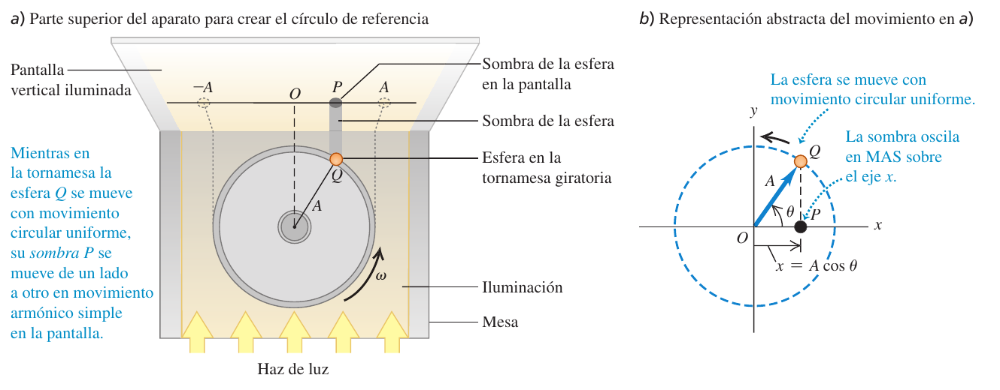
La esfera $Q$ está en el ángulo $\theta$ medido desde el eje $x$; como gira con rapidez angular constante, $\theta=\omega t+\phi$, donde $\phi$ es el ángulo en $t=0$. La sombra $P$ está en $x=A\cos\theta$. Como $a_x=-\omega^2x$ para esa sombra (es la componente de la aceleración centrípeta, de módulo $a_c=\omega^2A$ y dirigida hacia el centro), igualando con (14.4) se obtiene la frecuencia angular del resorte:
El periodo y la frecuencia del MAS no dependen de la amplitud $A$. Más rígido ($k$ mayor) ⇒ oscila más deprisa; más masa ($m$ mayor) ⇒ oscila más despacio. Es lo que hace útil al MAS en relojes: aunque la oscilación se vaya apagando, el ritmo es el mismo.
U p.438Un resorte se monta horizontalmente con su extremo izquierdo fijo. Una balanza de resorte que tira del libre hacia la derecha con 6,0 N lo estira 0,030 m. Quitamos la balanza, atamos un deslizador de $0{,}50$ kg a ese extremo, lo tiramos hasta 0,020 m, lo soltamos desde el reposo y se mueve sin fricción. Calcula $k$, $\omega$, $f$ y $T$.
- Constante del resorte (14.3). $k=\dfrac{F}{x}=\dfrac{6{,}0\ \text{N}}{0{,}030\ \text{m}}=200$ N/m.
- Frecuencia angular (14.10). $\omega=\sqrt{k/m}=\sqrt{200/0{,}50}=20$ rad/s.
- Frecuencia y periodo. $f=\dfrac{\omega}{2\pi}=\dfrac{20}{2\pi}=3{,}2$ Hz y $T=\dfrac1f=0{,}31$ s.
- Observa: la amplitud (0,020 m) no ha intervenido; el periodo solo depende de $k$ y $m$.
2.2 Posición, velocidad y aceleración en función del tiempo U p.439-441
$\phi$ es el ángulo de fase (en radianes); $\omega t+\phi$ es la «fase». La rapidez máxima es $v_{máx}=\omega A$ y ocurre en el equilibrio ($x=0$); la aceleración máxima es $a_{máx}=\omega^2A$ y ocurre en los extremos ($x=\pm A$), donde $v_x=0$.
U p.439-441Fíjate en el reparto: cuando el cuerpo está en un extremo se detiene un instante (v = 0) y la fuerza —y la aceleración— son máximas; al pasar por el equilibrio no hay fuerza (a = 0) y la velocidad es máxima. La velocidad «se adelanta» un cuarto de periodo a la posición (es como un seno frente a un coseno).
2.3 Ángulo de fase y condiciones iniciales U p.440-441
$A$ y $\phi$ no dependen del resorte sino de cómo se pone en marcha el movimiento. Evaluando (14.13) y (14.15) en $t=0$: $x_0=A\cos\phi$ (14.14) y $v_{0x}=-\omega A\sin\phi$ (14.17). Despejando:
Si $v_{0x}=0$ y $x_0\gt0$: $A=x_0$ y $\phi=0$. Si $x_0=0$ y $v_{0x}\gt0$: $A=v_{0x}/\omega$ y $\phi=-\pi/2$. Con $x_0\neq0$ y $v_{0x}\neq0$, $A\gt|x_0|$: parte de $x_0$ pero además lleva velocidad y llegará más lejos. La arcotangente da el ángulo en el cuadrante equivocado si no tienes cuidado: comprueba siempre que $\cos\phi$ tiene el signo de $x_0$ y $\sin\phi$ el de $-v_{0x}$.
U p.441- Identifica qué te dan: propiedades del sistema ($m$, $k$ y lo derivado: $T$, $f$, $\omega$) y propiedades del movimiento ($A$, $v_{máx}$, $\phi$, valores de $x$, $v_x$, $a_x$ en un instante).
- Calcula $\omega$ con $m$ y $k$ (14.10); con $x_0$ y $v_{0x}$ calcula $A$ (14.19) y $\phi$ (14.18).
- Escribe $x=A\cos(\omega t+\phi)$ y sustituye el $t$ pedido (calculadora en radianes).
- Evalúa: sustituye $t=0$ en tu resultado y comprueba que te sale $x_0$ y $v_{0x}$.
El deslizador del ejemplo 14.2 ($k=200$ N/m, $m=0{,}50$ kg, $\omega=20$ rad/s) se desplaza ahora a $x_0=+0{,}015$ m y se le da una velocidad $v_{0x}=+0{,}40$ m/s. Calcula el periodo, la amplitud, el ángulo de fase y escribe $x(t)$.
- Periodo: el mismo de antes, $T=0{,}31$ s (solo depende de $k$ y $m$).
- Amplitud (14.19): $A=\sqrt{0{,}015^2+\dfrac{0{,}40^2}{20^2}}=\sqrt{2{,}25\times10^{-4}+4{,}0\times10^{-4}}=0{,}025$ m. Mayor que $x_0$, como era de esperar.
- Fase (14.18): $\phi=\arctan\!\left(-\dfrac{0{,}40}{20\cdot0{,}015}\right)=\arctan(-1{,}33)=-0{,}93$ rad $=-53^\circ$. Comprobación del cuadrante: $x_0\gt0$ ⇒ $\cos\phi\gt0$ ✓; $v_{0x}\gt0$ ⇒ $\sin\phi\lt0$ ✓.
- Ecuación: $x=(0{,}025\ \text{m})\cos[(20\ \text{rad/s})\,t-0{,}93\ \text{rad}]$. Al evaluar en $t=0$: $0{,}025\cos(-0{,}93)=0{,}015$ m ✓.
- Usar grados en la calculadora al evaluar $\cos(\omega t+\phi)$: $\omega t$ y $\phi$ van en radianes.
- Creer que $T$ crece con la amplitud: en el MAS no depende de $A$ (ni de dónde se suelte).
- Tomar $A=x_0$ cuando también hay velocidad inicial; o confundir el signo de $\phi$ (olvidar el signo menos de 14.18).
- Confundir $\omega$ (rad/s) con $f$ (Hz) al calcular $v_{máx}=\omega A$.
3Energía en el movimiento armónico simple U p.442-445
En un resorte sin rozamiento no se pierde nada: la energía solo cambia de forma. En los extremos el cuerpo está parado y el resorte, estirado al máximo: toda la energía es potencial elástica. Al pasar por el equilibrio el resorte está relajado y el cuerpo va a su máxima velocidad: toda la energía es cinética. En medio, un poco de cada. Analogía: un columpio, que cambia altura (energía potencial) por velocidad (cinética) y vuelve a empezar. La energía total es una constante que depende solo de lo grande que sea la oscilación.
U p.442La única fuerza que realiza trabajo es la del resorte, que es conservativa; por tanto la energía mecánica $E=K+U$ se conserva:
$$E=\tfrac12mv_x^2+\tfrac12kx^2=\tfrac12kA^2=\text{constante}\qquad(14.21)$$(En los extremos $x=\pm A$ y $v_x=0$, así que $E=\tfrac12kA^2$.) La energía es proporcional al cuadrado de la amplitud y no depende de la masa: si doblas $A$, $E$ se multiplica por 4. Equivalentemente $E=\tfrac12m\omega^2A^2$.
U p.442-443Despejando $v_x$ de (14.21):
$$v_x=\pm\sqrt{\frac km}\,\sqrt{A^2-x^2}\qquad(14.22)\qquad\qquad v_{máx}=\sqrt{\frac km}\,A=\omega A\qquad(14.23)$$El $\pm$ indica que a cada $x$ se puede pasar en los dos sentidos; el signo lo decides por el sentido del movimiento. En $x=\pm A$, $v_x=0$ (puntos de retorno). El cuerpo nunca puede salir de $[-A,+A]$: ahí $U$ valdría más que $E$ y $K$ saldría negativa.
U p.443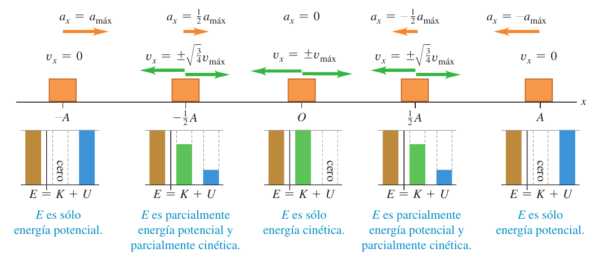
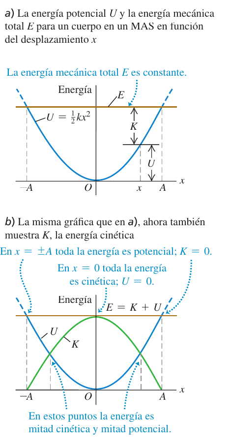
Cómo leer el diagrama de energía (fig. 14.15): la energía potencial es una parábola; la energía total, una recta horizontal; la energía cinética en cada $x$ es la distancia vertical entre ambas ($K=E-U$). Los puntos de retorno son donde la recta corta a la parábola ($x=\pm A$). En $x=\pm A/\sqrt2\approx\pm0{,}707A$ las energías cinética y potencial valen cada una $E/2$; en $x=\pm A/2$, $U=E/4$ y $K=3E/4$.
La ecuación de la energía es la relación útil entre velocidad, desplazamiento y energía total. Si el problema relaciona $x$, $v_x$ y $a_x$ sin hablar del tiempo, usa (14.4) o (14.21); si da o pide un instante concreto, usa $x(t)$. Como en (14.21) entran $x^2$ y $v_x^2$, los signos de $x$ y $v_x$ los tienes que deducir de la situación (hacia dónde se mueve).
U p.444Para el deslizador del ejemplo 14.2 ($k=200$ N/m, $m=0{,}50$ kg, $A=0{,}020$ m): a) velocidades máxima y mínima; b) aceleraciones máxima y mínima; c) $v_x$ y $a_x$ cuando se ha movido la mitad del camino desde $x_0=A$ hasta el equilibrio; d) energías total, potencial y cinética ahí.
- a) $v_{máx}=\sqrt{k/m}\,A=20(0{,}020)=0{,}40$ m/s, que ocurre en $x=0$; las velocidades extremas son $\pm0{,}40$ m/s (derecha o izquierda).
- b) $a_x=-(k/m)x$ (14.4): $a_{máx}=+\dfrac{200}{0{,}50}(0{,}020)=8{,}0$ m/s² en $x=-A$, y $a_{mín}=-8{,}0$ m/s² en $x=+A$.
- c) Medio camino: $x=A/2=0{,}010$ m. De (14.22), $v_x=-\sqrt{\dfrac{200}{0{,}50}}\sqrt{0{,}020^2-0{,}010^2}=-0{,}35$ m/s (negativa: va de $x=A$ hacia $0$). De (14.4), $a_x=-\dfrac{200}{0{,}50}(0{,}010)=-4{,}0$ m/s².
- d) $E=\tfrac12kA^2=\tfrac12(200)(0{,}020)^2=0{,}040$ J; $U=\tfrac12kx^2=\tfrac12(200)(0{,}010)^2=0{,}010$ J; $K=\tfrac12mv_x^2=\tfrac12(0{,}50)(0{,}35)^2=0{,}030$ J. Suman $E$ ✓. En $x=A/2$ la energía es una cuarta parte potencial y tres cuartas partes cinética.
Un bloque de masa $M$ en un resorte horizontal oscila con amplitud $A_1$. a) Justo cuando pasa por el equilibrio, cae verticalmente un trozo de masilla de masa $m$ y se pega a él. Calcula la nueva amplitud y el nuevo periodo. b) Lo mismo si la masilla cae cuando el bloque está en un extremo.
- Idea. Antes y después del choque la energía mecánica del sistema bloque-resorte se conserva; en el choque (totalmente inelástico) se conserva la cantidad de movimiento horizontal, pero no la energía cinética.
- a) Velocidad antes: en $x=0$ toda la energía es cinética: $\tfrac12Mv_1^2=\tfrac12kA_1^2$ ⇒ $v_1=\sqrt{k/M}\,A_1$.
- a) Choque: $Mv_1=(M+m)v_2$ ⇒ $v_2=\dfrac{M}{M+m}v_1$. Justo después sigue en $x=0$: $E_2=\tfrac12(M+m)v_2^2=\dfrac{M}{M+m}\,E_1$.
- a) Amplitud: $E_2=\tfrac12kA_2^2$ ⇒ $\boldsymbol{A_2=A_1\sqrt{\dfrac{M}{M+m}}}$. Periodo (14.12) con la masa total: $T_2=2\pi\sqrt{\dfrac{M+m}{k}}$.
- b) En un extremo el bloque está parado: no hay choque «efectivo», $v$ vale $0$ antes y después y la energía (toda potencial) no cambia: $A_2=A_1$. El periodo es el mismo $T_2=2\pi\sqrt{(M+m)/k}$.
- Evaluación: en a) se pierde energía porque la masilla resbala sobre el bloque durante el choque (se disipa por fricción cinética); en b) no se pierde nada.
- Pensar que $E$ depende de la masa: $E=\tfrac12kA^2$ solo depende de $k$ y de $A$.
- Creer que $K=U$ ocurre en $x=A/2$: como $U$ es cuadrática, a mitad de camino solo hay $U=E/4$. Ocurre en $x=\pm A/\sqrt2$.
- Conservar la energía a través de un choque (masilla, bala, masa que cae): el choque conserva $\vec P$, no $E$; después sí vuelve a conservarse $E$ del conjunto.
- Olvidar el signo de $v_x$ en (14.22): la raíz da la rapidez; el signo lo da el sentido del movimiento.
Para duplicar la energía total de un sistema masa-resorte, ¿en qué factor hay que aumentar la amplitud? Como $E\propto A^2$, en $\sqrt2=1{,}414$. ¿Cambia la frecuencia? No: no depende de la amplitud.
U p.445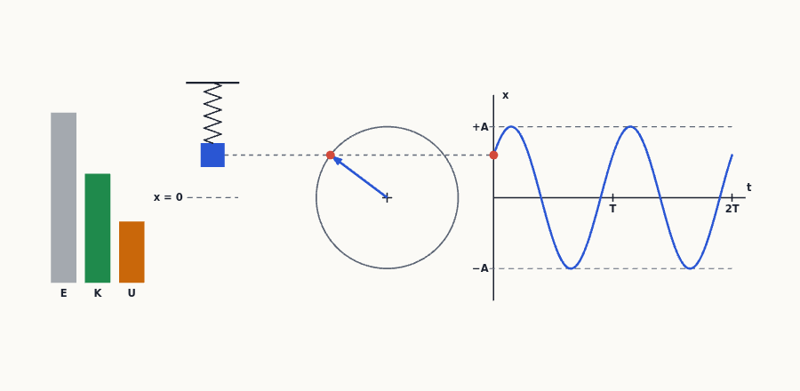
4Aplicaciones del movimiento armónico simple U p.446-450
4.1 MAS vertical U p.446
¿Cambia algo si el resorte cuelga en vertical con una masa en el extremo? La gravedad tira hacia abajo, pero lo único que hace es estirar el resorte hasta un nuevo equilibrio más abajo; alrededor de ese nuevo equilibrio, el resorte y el peso juntos producen la misma fuerza restauradora de siempre. Es como jugar al columpio en una cuesta: sigue siendo un columpio.
U p.446En equilibrio, el resorte estirado $\Delta l$ equilibra el peso: $k\,\Delta l=mg$. Toma $x=0$ en esa posición, con $+x$ hacia arriba. Si el cuerpo está a una distancia $x$ por encima del equilibrio, el estiramiento es $\Delta l-x$ y la fuerza neta es $F_{neta}=k(\Delta l-x)+(-mg)=-kx$. Es la misma ley de Hooke ⇒ MAS con la misma $\omega=\sqrt{k/m}$. El peso solo cambia dónde está el centro de la oscilación, no el periodo. Un truco: de $k\,\Delta l=mg$ se obtiene $T=2\pi\sqrt{\Delta l/g}$, útil si te dan el estiramiento estático.
U p.446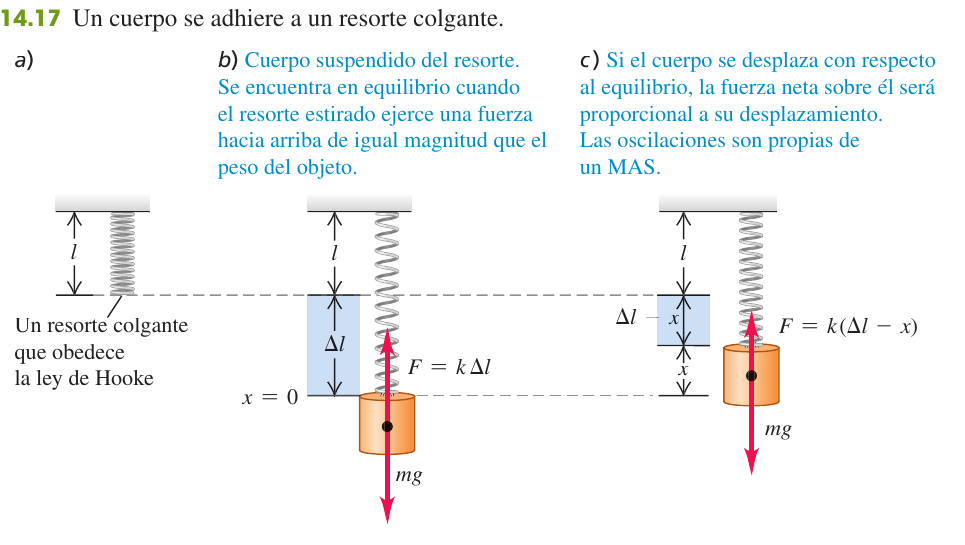
Los amortiguadores de un auto de 1000 kg están gastados. Una persona de 980 N que se sube lentamente al auto lo hace bajar 2,8 cm. Modela el auto y la persona como un solo cuerpo en un solo resorte: calcula el periodo y la frecuencia de su oscilación al caer en un bache.
- Constante del resorte. Los 980 N comprimen el resorte 0,028 m: $k=\dfrac{980\ \text{N}}{0{,}028\ \text{m}}=3{,}5\times10^4$ N/m.
- Masa oscilante. La persona tiene $m=w/g=980/9{,}8=100$ kg; el total es $1000+100=1100$ kg.
- Periodo y frecuencia. $T=2\pi\sqrt{\dfrac{1100}{3{,}5\times10^4}}=1{,}11$ s y $f=\dfrac1T=0{,}90$ Hz.
- Evaluación: una oscilación persistente de 1 s es muy molesta; por eso se ponen amortiguadores (§7).
Un bloque colgado de un resorte oscila con periodo 10 s en la Tierra. ¿Y en Marte, donde $g$ es el 40 % del terrestre? Los mismos 10 s: $T=2\pi\sqrt{m/k}$ no contiene $g$. En Marte el equilibrio queda más arriba (el resorte se estira menos), pero la oscilación va igual de rápida.
U p.4494.2 MAS angular U p.447
También gira el MAS: la rueda de balance de un reloj mecánico oscila porque un muelle espiral ejerce una torca de restitución proporcional al ángulo, $\tau_z=-\kappa\theta$ ($\kappa$ es la «constante de torsión»). La segunda ley de rotación $\tau_z=I\alpha_z$ da $d^2\theta/dt^2=-(\kappa/I)\theta$: idéntica a (14.4) con $x\to\theta$ y $k/m\to\kappa/I$.
$\Theta$ (theta mayúscula) hace de amplitud angular. La regla es siempre la misma: $\omega=\sqrt{\text{constante de recuperación}/\text{inercia}}$.
U p.4474.3 Vibraciones de moléculas U p.447-449
Dos átomos neutros (p. ej. dos de argón) se atraen a distancia y se repelen si se acercan demasiado; hay una separación de equilibrio $R_0$. Una forma sencilla de describirlo es la energía potencial de Van der Waals:
$$U=U_0\left[\left(\frac{R_0}{r}\right)^{12}-2\left(\frac{R_0}{r}\right)^{6}\right]\qquad(14.25)$$con $U_0$ constante positiva (en $r=R_0$, $U=-U_0$). La fuerza es $F_r=-dU/dr$ (14.26); positiva para $r\lt R_0$ y negativa para $r\gt R_0$: es de restitución. Con el desplazamiento $x=r-R_0$ pequeño frente a $R_0$ y el teorema del binomio $(1+u)^n\approx1+nu$ se obtiene $F_r\approx-\dfrac{72U_0}{R_0^2}\,x$ (14.29): ley de Hooke con $k=72U_0/R_0^2$. Así, las vibraciones moleculares de pequeña amplitud son un MAS.
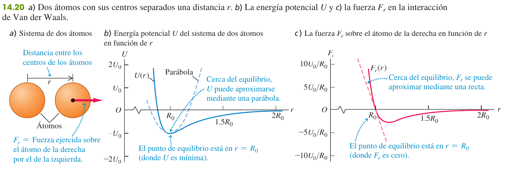
Dos átomos de argón forman una molécula Ar$_2$ con $U_0=1{,}68\times10^{-21}$ J y $R_0=3{,}82\times10^{-10}$ m. Calcula la frecuencia de las oscilaciones pequeñas (masa del Ar: $6{,}63\times10^{-26}$ kg).
- Constante de fuerza (14.29). $k=\dfrac{72U_0}{R_0^2}=\dfrac{72(1{,}68\times10^{-21})}{(3{,}82\times10^{-10})^2}=0{,}829$ N/m (parecida a la de un muelle de juguete tipo Slinky).
- Frecuencia (14.11) con un átomo fijo y el otro oscilando: $f=\dfrac1{2\pi}\sqrt{\dfrac{0{,}829}{6{,}63\times10^{-26}}}=5{,}63\times10^{11}$ Hz.
- Corrección. Como el centro de masa de la molécula no se acelera, los dos átomos oscilan en sentidos opuestos: equivale a sustituir $m$ por $m/2$, y $f$ sube en $\sqrt2$: $f=7{,}96\times10^{11}$ Hz. (El resultado cuántico coincide.)
5El péndulo simple U p.450-451
Un péndulo simple es una «lenteja» pequeña y pesada colgada de un hilo que no se estira ni pesa. Al apartarla, la gravedad la tira de vuelta hacia la vertical (el peso hace de «resorte»). Para ángulos pequeños, esa fuerza es proporcional al desplazamiento: es un MAS casi perfecto. Lo sorprendente: ni la masa ni la amplitud entran en el periodo; solo cuentan la longitud $L$ y la gravedad $g$.
U p.450El hilo, de longitud $L$, hace que la lenteja describa un arco; la tensión no tiene componente a lo largo del arco, así que la fuerza tangencial de restitución es $F_\theta=-mg\sin\theta$ (14.30). Para $\theta$ pequeño ($\sin\theta\approx\theta$, con $\theta$ en radianes) y con $x=L\theta$: $F_\theta\approx-mg\theta=-\dfrac{mg}{L}\,x$ (14.31): ley de Hooke con $k=mg/L$. Entonces
$$\omega=\sqrt{\frac gL}\ (14.32)\qquad f=\frac1{2\pi}\sqrt{\frac gL}\ (14.33)\qquad T=2\pi\sqrt{\frac Lg}\ (14.34)$$La masa se cancela porque la fuerza de restitución (el peso) es proporcional a ella: es el mismo motivo por el que todos los cuerpos caen con la misma aceleración. Un péndulo largo oscila más despacio; si $g$ aumenta, aumenta la fuerza restauradora y el periodo disminuye.
U p.450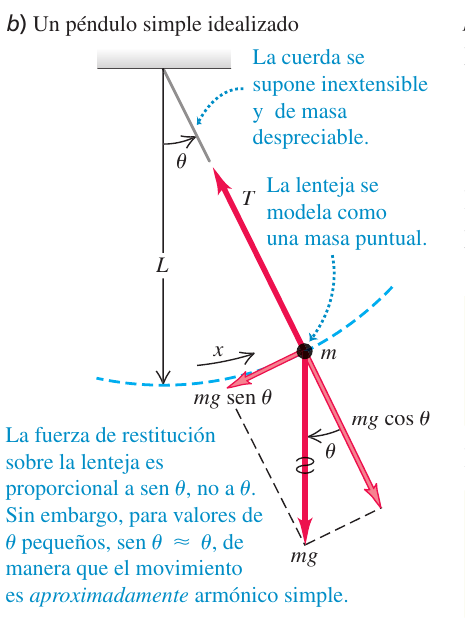
¿Y si el ángulo no es pequeño? Entonces el movimiento no es exactamente armónico y el periodo crece algo con la amplitud $\Theta$: $T=2\pi\sqrt{\dfrac Lg}\left(1+\dfrac1{2^2}\sin^2\dfrac\Theta2+\dfrac{1^2\cdot3^2}{2^2\cdot4^2}\sin^4\dfrac\Theta2+\cdots\right)$ (14.35). Para $\Theta\lt15^\circ$ el periodo real se desvía de (14.34) en menos de un 0,5 %; por eso un reloj de péndulo mantiene la hora aunque la oscilación se vaya apagando. U p.450-451
Calcula el periodo y la frecuencia de un péndulo simple de longitud 1,000 m en un lugar con $g=9{,}800$ m/s².
- Periodo (14.34). $T=2\pi\sqrt{\dfrac{L}{g}}=2\pi\sqrt{\dfrac{1{,}000}{9{,}800}}=2{,}007$ s.
- Frecuencia. $f=\dfrac1T=\dfrac1{2{,}007}=0{,}4983$ Hz.
- Observación: el periodo es casi 2 s: cada «tic» y cada «tac» de un reloj de péndulo de 1 m dura medio periodo, es decir, un segundo.
- Pensar que el periodo depende de la masa de la lenteja (no: se cancela) o de la amplitud (solo si es grande).
- Usar $L$ medida hasta el techo: es la distancia del pivote al centro de la lenteja.
- Dejar $\theta$ en grados dentro de $F_\theta=-mg\theta$: $\sin\theta\approx\theta$ solo vale con $\theta$ en radianes.
- Olvidar que en un ascensor acelerado cambia la gravedad efectiva: con aceleración $a$ hacia arriba $g_{ef}=g+a$ y $T$ disminuye; en caída libre no oscila.
Un cuerpo en un resorte horizontal tiene aceleración cero al pasar por el equilibrio. Cuando la lenteja de un péndulo simple pasa por su posición de equilibrio (cuerda vertical), ¿cuál es su aceleración? Hacia arriba (opción iv): la fuerza tangencial es cero, pero la lenteja describe un arco de círculo y necesita una aceleración centrípeta $v^2/L$ hacia el centro; por eso la tensión es allí mayor que el peso.
U p.4516El péndulo físico U p.451-453
El péndulo simple es un caso ideal (toda la masa en un punto). Un péndulo físico es cualquier cuerpo real que cuelga de un eje horizontal y oscila: una pierna al caminar, una puerta que se balancea, una biela, una campana. Ahora la masa no está concentrada: hace falta el momento de inercia $I$ respecto al eje de giro. La idea sigue siendo la de siempre: $\omega=\sqrt{\text{recuperación}/\text{inercia}}$.
U p.451El cuerpo cuelga del pivote $O$; su centro de gravedad (cg) está a una distancia $d$ del eje. Al desviarlo un ángulo $\theta$, el peso $mg$ (aplicado en el cg) produce una torca de restitución $\tau_z=-(mg)(d\sin\theta)$ (14.36). Para $\theta$ pequeño, $\tau_z\approx-(mgd)\theta$ (14.37). La ecuación de rotación $\tau_z=I\,d^2\theta/dt^2$ da $d^2\theta/dt^2=-\dfrac{mgd}{I}\theta$: otra vez la forma de (14.4), con $mgd/I$ en lugar de $k/m$. Por tanto
$$\omega=\sqrt{\frac{mgd}{I}}\quad(14.38)\qquad\qquad T=2\pi\sqrt{\frac{I}{mgd}}\quad(14.39)$$$d$ es la distancia del eje de giro al centro de gravedad e $I$ el momento de inercia respecto a ese eje (a menudo hay que usar el teorema de los ejes paralelos, tema 9). Para un péndulo simple $I=mL^2$ y $d=L$: se recupera (14.34).
U p.451-452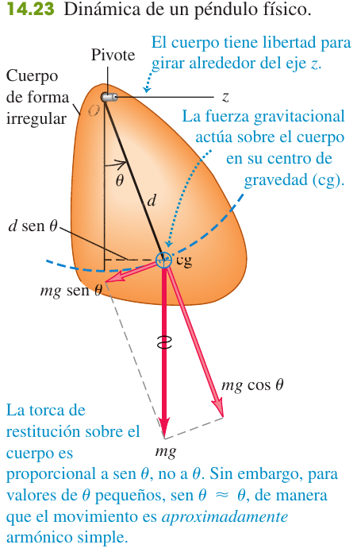
La ec. (14.39) permite medir el momento de inercia de un cuerpo de forma complicada: se localiza el cg por balanceo, se cuelga el cuerpo de un eje, se mide el periodo $T$ (mejor cronometrando muchas oscilaciones) y se despeja $I=mgd\,T^2/4\pi^2$. Es el método del ejercicio 14.55 (resuelto más abajo) y lo usan los biomecánicos con las extremidades de los animales.
U p.452Una varilla uniforme de longitud $L$ y masa $M$ pivota en un extremo. Calcula su periodo y compáralo con el del péndulo simple de longitud $L$.
- Datos del péndulo físico. $I=\tfrac13ML^2$ (varilla uniforme, eje en un extremo, tabla 9.2) y $d=L/2$ (el cg está en el centro).
- Periodo (14.39). $T=2\pi\sqrt{\dfrac{\tfrac13ML^2}{Mg(L/2)}}=2\pi\sqrt{\dfrac{2L}{3g}}$.
- Número. Con $L=1{,}00$ m y $g=9{,}80$ m/s²: $T=2\pi\sqrt{\dfrac{2(1{,}00)}{3(9{,}80)}}=1{,}64$ s.
- Comparación. Es $\sqrt{2/3}=0{,}816$ veces el periodo del péndulo simple de igual longitud (2,007 s): oscila más deprisa porque su masa está en promedio más cerca del pivote.
Modela una pierna como una varilla uniforme con pivote en la cadera y un paso como medio periodo. a) ¿Cómo depende el ritmo natural de la marcha de la longitud $L$ de la pierna? b) Un T. rex tenía $L=3{,}1$ m y una zancada de $S=4{,}0$ m (distancia entre dos huellas del mismo pie): ¿a qué velocidad caminaba?
- a) Del ejemplo 14.9, $T=2\pi\sqrt{2L/3g}\propto\sqrt L$: el ritmo (pasos por segundo) es el doble de la frecuencia, que es proporcional a $1/\sqrt L$. A mayor longitud de pierna, menor ritmo: las piernas largas dan pasos más pausados.
- b) Tiempo por zancada: $T=2\pi\sqrt{\dfrac{2(3{,}1)}{3(9{,}8)}}=2{,}9$ s.
- Velocidad: $v=\dfrac ST=\dfrac{4{,}0}{2{,}9}=1{,}4$ m/s $=5{,}0$ km/h, más o menos lo que camina una persona.
- Evaluación: una varilla uniforme no es un buen modelo de pierna (hay más masa entre cadera y rodilla); con un cg más cercano a la cadera el periodo sería más corto y la velocidad algo mayor.
Una varilla uniforme de longitud $2L$ pivotada en un extremo tiene su cg a una distancia $L$, igual que un péndulo simple de longitud $L$. ¿Qué periodo tiene? Mayor: con la misma $d=L$, su momento de inercia $I=\tfrac13m(2L)^2=\tfrac43mL^2$ es mayor que $mL^2$ y $T\propto\sqrt{I}$.
U p.4537Oscilaciones amortiguadas U p.453-455
Los osciladores reales no oscilan para siempre: un columpio al que dejas de empujar se para, los amortiguadores de un coche matan las oscilaciones del muelle. El culpable es el rozamiento (aire, aceite…), que roba energía mecánica en cada ciclo y la convierte en calor. Esa pérdida progresiva de amplitud se llama amortiguamiento. Analogía: un péndulo dentro de un bote de miel: sube, pero tan despacio que ni oscila.
U p.453El caso más sencillo es una fuerza de rozamiento proporcional a la velocidad (fluidos viscosos, amortiguadores): $F_x=-bv_x$, con $b$ la constante de amortiguamiento (el signo menos la hace opuesta a la velocidad). La fuerza neta sobre el cuerpo es $\sum F_x=-kx-bv_x$ (14.40) y la segunda ley da
$$-kx-b\frac{dx}{dt}=m\frac{d^2x}{dt^2}\qquad(14.41)$$Si el amortiguamiento es débil, la solución es una oscilación con amplitud decreciente exponencialmente:
$$x=Ae^{-(b/2m)t}\cos(\omega' t+\phi)\quad(14.42)\qquad\omega'=\sqrt{\frac km-\frac{b^2}{4m^2}}\quad(14.43)$$La amplitud $Ae^{-(b/2m)t}$ decae más deprisa cuanto mayor es $b$ (curvas punteadas de la figura), y la frecuencia angular $\omega'$ es algo menor que la del oscilador sin amortiguar, $\omega=\sqrt{k/m}$: el periodo aumenta.
U p.453-454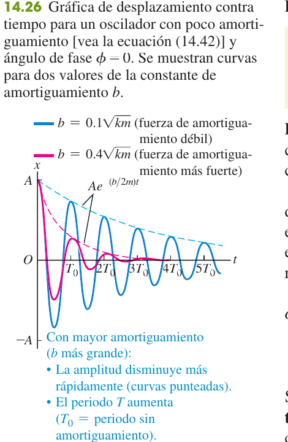
Si $b$ crece, $\omega'$ disminuye y se anula cuando $\dfrac km-\dfrac{b^2}{4m^2}=0$, es decir, $b=2\sqrt{km}$ (14.44). Según $b$ frente a ese valor:
- Subamortiguado ($b\lt2\sqrt{km}$): oscila con amplitud decreciente (14.42). Ej.: amortiguadores gastados; el ala de un avión tras una ráfaga.
- Críticamente amortiguado ($b=2\sqrt{km}$): $\omega'=0$, el sistema no oscila y vuelve al equilibrio lo más rápido posible. Es lo que se busca en un amortiguador ideal.
- Sobreamortiguado ($b\gt2\sqrt{km}$): tampoco oscila, pero vuelve al equilibrio más lentamente (suspensión demasiado «dura» o «viscosa»: el coche tarda en recuperarse tras un bache).
La fuerza amortiguadora no es conservativa: la energía mecánica $E=\tfrac12mv_x^2+\tfrac12kx^2$ disminuye. Derivando $E$ y usando (14.41):
$$\frac{dE}{dt}=-bv_x^2\qquad(14.45)$$La rapidez con que se pierde energía es proporcional a $v_x^2$ y siempre negativa. Esa energía se convierte en energía interna (calor) del fluido y del oscilador. Como $E\approx\tfrac12kA^2$ en cada ciclo, si la amplitud baja de $A_1$ a $A_2$ la energía baja en $(A_2/A_1)^2$ (problema 14.59).
U p.455Una ráfaga de viento eleva la punta de un avión que vuela a altitud constante; la punta se balancea verticalmente hasta que el avión recupera su altitud. ¿Son estas oscilaciones no amortiguadas, subamortiguadas, críticamente amortiguadas o sobreamortiguadas? Subamortiguadas: hay oscilaciones (si fueran críticas o sobreamortiguadas la punta volvería suavemente sin pasarse) pero con amplitud decreciente en cada ciclo, como en la figura 14.26.
U p.4558Oscilaciones forzadas y resonancia U p.455-456
Para que un oscilador amortiguado no se pare hay que darle energía con una fuerza que se repita. Empujar a un niño en un columpio es el ejemplo: si empujas al ritmo natural del columpio, cada empujón suma al anterior y la amplitud se hace enorme; si empujas a otro ritmo, unos empujones frenan lo que otros aceleran y no consigues nada. Ese «ritmo natural» es la frecuencia propia $\omega=\sqrt{k/m}$ del columpio, y el fenómeno se llama resonancia. Es la razón por la que un grupo de soldados no debe cruzar un puente al paso, o por la que un altavoz hace zumbar un objeto suelto con una nota concreta.
U p.455-456Se aplica una fuerza impulsora sinusoidal $F_{máx}\cos\omega_dt$ de frecuencia angular $\omega_d$ a un oscilador amortiguado. Tras un tiempo (el régimen transitorio se apaga) el cuerpo oscila con la frecuencia impulsora $\omega_d$, no con la propia, y con amplitud
$$A=\frac{F_{máx}}{\sqrt{(k-m\omega_d^2)^2+b^2\omega_d^2}}\qquad(14.46)$$Cuando $\omega_d$ se acerca a $\omega=\sqrt{k/m}$ el término $k-m\omega_d^2$ se anula y $A$ toma su valor máximo: resonancia. La altura del pico es $\propto1/b$: con poco amortiguamiento es muy alto y puntiagudo; más amortiguamiento lo reduce, lo ensancha y lo desplaza hacia frecuencias más bajas. Si $b\ge\sqrt{2km}$, el pico desaparece por completo. Con $\omega_d\to0$ la amplitud es $F_{máx}/k$ (una fuerza constante estira el resorte esa cantidad).
U p.456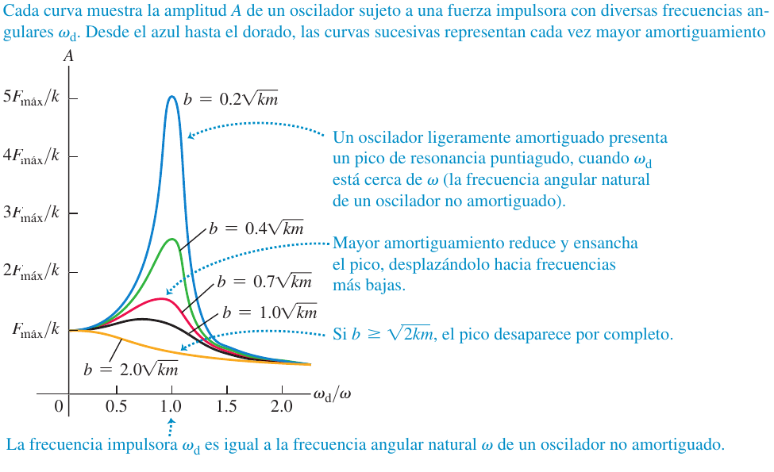
- Creer que el oscilador forzado oscila con su frecuencia propia: en régimen estacionario oscila con la impulsora.
- Confundir $\omega'$ (oscilación libre amortiguada) con $\omega$ (sin amortiguar) o con $\omega_d$ (la del empuje).
- Pensar que la resonancia exige $b=0$: con amortiguamiento la amplitud en resonancia es grande pero finita ($\approx F_{máx}/b\omega$).
Cerca de la frecuencia natural, un oscilador con muy poco amortiguamiento responde mucho más que uno con más. Si se impulsan con una frecuencia mucho mayor o mucho menor que la natural, ¿cuál responde más? El de menos amortiguamiento (opción i): en la figura 14.28 la curva de menor $b$ va por encima de las demás a todas las frecuencias, aunque lejos de la resonancia la diferencia es pequeña.
U p.457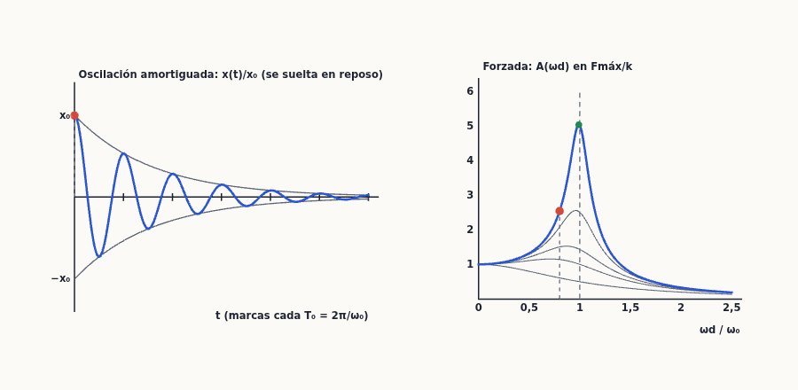
9Problema práctico: oscilar y rodar U p.458
Problema práctico — Dos cilindros que ruedan unidos a un resorte U p.458 U p.286, 311-313, 436-438
Dos cilindros sólidos uniformes, de radio $R$ y masa total $M$, están conectados a lo largo de su eje común mediante una varilla corta y ligera, y descansan sobre una mesa horizontal (figura 14.29). Un anillo sin fricción en el centro de la varilla está unido a un resorte con constante de fuerza $k$; el otro extremo del resorte está fijo. Se tira de los cilindros hacia la izquierda una distancia $x$, estirando el resorte, y luego se suelta el sistema a partir del reposo. Debido a la fricción entre la mesa y los cilindros, estos últimos ruedan sin resbalar conforme oscilan. Demuestra que el movimiento del centro de masa de los cilindros es armónico simple y encuentra su periodo.
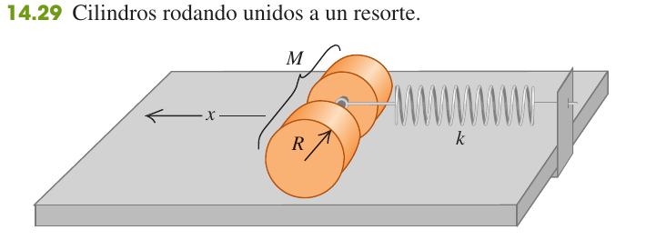
- Qué hay que demostrar. Que la aceleración del centro de masa cumple $a_{cm,x}=-\omega^2x$ con $\omega$ constante (14.4): proporcional y opuesta al desplazamiento. Entonces $T=2\pi/\omega$.
- Ecuaciones. El cuerpo se traslada y gira. Traslación del CM: $\sum F_x=Ma_{cm,x}$ (10.12). Rotación alrededor del eje por el CM: $\sum\tau_z=I_{cm}\alpha_z$ (10.13). Rodar sin resbalar: $a_{cm}=R\alpha$ (derivada de 10.11). Los dos cilindros macizos juntos tienen $I_{cm}=\tfrac12MR^2$ (tabla 9.2; la varilla es ligera).
- Fuerzas horizontales. $x$ es la posición del CM desde el equilibrio (resorte sin estirar), $+x$ hacia el resorte. El resorte actúa en el anillo, sobre el eje: $-kx$ y no hace torca respecto al CM (brazo nulo). La fricción estática $f$ actúa en el contacto con la mesa, a distancia $R$ del eje: es la única que hace girar los cilindros. Peso y normal se anulan y no hacen torca.
- Traslación: $-kx+f=Ma_{cm}$ (el signo de $f$ lo dirá el álgebra).
- Rotación (con $a_{cm}=R\alpha$ para avanzar hacia $+x$): una fricción dirigida hacia $+x$ produce una torca opuesta al giro, $-fR=\tfrac12MR^2\alpha$ ⇒ $f=-\tfrac12Ma_{cm}$.
- Combinar: $-kx-\tfrac12Ma_{cm}=Ma_{cm}$ ⇒ $\tfrac32Ma_{cm}=-kx$ ⇒ $\boldsymbol{a_{cm}=-\dfrac{2k}{3M}\,x}$. Es de la forma $a=-\omega^2x$ con $\omega^2=\dfrac{2k}{3M}$ constante: el centro de masa describe un MAS. (De paso $f=+\tfrac13kx$: la fricción vale un tercio de la fuerza del resorte y se le opone.)
- Periodo: $T=\dfrac{2\pi}{\omega}=\boldsymbol{2\pi\sqrt{\dfrac{3M}{2k}}}$ (coincide con la respuesta de U, p. 467).
- Evaluar. Sin fricción no habría torca, los cilindros resbalarían sin girar y oscilarían como un bloque, $T_0=2\pi\sqrt{M/k}$. Rodando el periodo es mayor en $\sqrt{3/2}=1{,}22$: la misma fuerza del resorte debe acelerar la traslación y la rotación; es como si la masa fuera $M+I/R^2=\tfrac32M$.
- Comprobación por energía. $E=\tfrac12Mv^2+\tfrac12I\omega_{rot}^2+\tfrac12kx^2=\tfrac12\left(\tfrac32M\right)v^2+\tfrac12kx^2$: forma de (14.21) con $m\to\tfrac32M$ ⇒ $\omega=\sqrt{2k/3M}$. La fricción estática no trabaja (no hay deslizamiento), por eso se conserva $E$.
(i) Usar $T=2\pi\sqrt{M/k}$ olvidando la rotación. (ii) Poner la torca del resorte respecto al CM (actúa sobre el eje: brazo nulo). (iii) Pensar que la fricción «roba energía»: es estática y no trabaja.
10Ejercicios resueltos
Primero los ejercicios de examen real (X), que son los que más importan: 1 problema y 6 preguntas de teoría. Después, los problemas del libro (E), de los más sencillos a los más difíciles. Pulsa «Mostrar soluciones» arriba para abrirlos todos de una vez. Cada ejercicio termina con una receta reutilizable.
10.1 Ejercicios de examen real (X)
X1 — Masa que cae sobre una bandeja colgada de un resorte: choque inelástico y MAS vertical X U p.47, 248, 438-446
Un resorte con masa despreciable y constante elástica $k=500$ N/m cuelga verticalmente y de su extremo inferior cuelga una bandeja de 0,5 kg. Se deja caer sobre la bandeja una masa deformable de 1 kg desde una altura de 0,5 m. Suponiendo que el impacto de la masa sobre la bandeja es perfectamente inelástico y que el sistema queda en movimiento armónico simple vertical, calcula: a) la velocidad de la bandeja y la masa justo después del impacto; b) la amplitud del movimiento posterior; c) el periodo de ese movimiento. (3 puntos)
Este mismo ejercicio está resuelto en el tema 8 (X3) con la energía del resorte y de la gravedad; aquí lo hacemos con las herramientas de este tema (equilibrio desplazado, $\omega$, $A$ de las condiciones iniciales), que es más corto y es lo que el enunciado sugiere ("queda en MAS"). Los resultados coinciden.
- Tres etapas, tres leyes. (i) Caída libre de $m$ → cinemática; (ii) choque instantáneo → solo se conserva la cantidad de movimiento; (iii) después, MAS del conjunto. No se puede usar la energía a través del choque: un choque totalmente inelástico pierde energía cinética.
- Caída libre. $v_0^2=2gh$ ⇒ $v_0=\sqrt{2(9{,}8)(0{,}5)}=3{,}13$ m/s hacia abajo.
- a) Choque. Dura tan poco que el impulso del peso y del resorte es despreciable frente al de las fuerzas internas ⇒ $P_y$ se conserva: $m\,v_0=(m+M)V$ ⇒ $V=\dfrac{1\cdot3{,}13}{1{,}5}=$ 2,09 m/s hacia abajo.
- ¿Dónde está el nuevo equilibrio? La gravedad solo desplaza el equilibrio (§4.1). Antes del choque la bandeja sola estaba en equilibrio con estiramiento $Mg/k$; el conjunto lo tendrá en $(m+M)g/k$. El nuevo equilibrio está más abajo, a $mg/k=\dfrac{1\cdot9{,}8}{500}=0{,}0196$ m.
- Condiciones iniciales del MAS ($t=0$ justo tras el choque, $+x$ hacia arriba, $x$ medida desde el nuevo equilibrio): $x_0=+0{,}0196$ m (el choque ocurre por encima del nuevo equilibrio) y $v_{0x}=-2{,}09$ m/s.
- Frecuencia angular. $\omega=\sqrt{\dfrac{k}{m+M}}=\sqrt{\dfrac{500}{1{,}5}}=18{,}26$ rad/s. La masa que oscila es la del conjunto.
- b) Amplitud (14.19): $A=\sqrt{x_0^2+\dfrac{v_{0x}^2}{\omega^2}}=\sqrt{0{,}0196^2+\left(\dfrac{2{,}087}{18{,}26}\right)^2}=\sqrt{0{,}0196^2+0{,}1143^2}=$ 0,116 m.
- c) Periodo (14.12): $T=2\pi\sqrt{\dfrac{m+M}{k}}=2\pi\sqrt{\dfrac{1{,}5}{500}}=$ 0,344 s. No depende de $g$ ni de $A$.
- (Ampliación) Ecuación completa. $\phi=\arctan\!\left(-\dfrac{v_{0x}}{\omega x_0}\right)=\arctan(5{,}83)=1{,}40$ rad (80,3°), cuadrante correcto porque $x_0\gt0$. Así $x(t)=(0{,}116\ \text{m})\cos[(18{,}26\ \text{rad/s})t+1{,}40]$; el punto más bajo se alcanza cuando $\omega t+\phi=\pi$, en $t=0{,}095$ s.
- Comprobación. Si se olvida que el choque ocurre fuera del nuevo equilibrio, sale $A=V/\omega=0{,}114$ m (error del 2 %): pequeño aquí, pero es un error de planteamiento. $a_{máx}=\omega^2A=38{,}7$ m/s² $\gt g$: si la masa no estuviera pegada, se separaría en la parte alta.
Resultado: a) 2,09 m/s hacia abajo; b) 0,116 m; c) 0,344 s.
(i) Conservar la energía a través del choque. (ii) Tomar $A=V/\omega$ (como si el choque fuera en el equilibrio). (iii) Usar solo $M$ o solo $m$ en $T$ y $\omega$.
Desarrollo modelo del tema «El movimiento armónico simple. Energía del MAS» (para X2-X6) U p.434-453
Extensión orientativa: una cara. Lo que no puede faltar está en negrita. Si el título es solo «Energía del MAS» (X2, X3, X4), resume los puntos 1-3 en cuatro líneas y desarrolla a fondo los 4-8; si es «Movimiento armónico simple» (X5), al revés (1-4 a fondo, 5-8 resumidos); X6 pide las dos cosas.
- Movimiento periódico y magnitudes (U pp. 434-435). Movimiento que se repite en ciclos alrededor de una posición de equilibrio estable, gracias a una fuerza de restitución que siempre apunta hacia el equilibrio. Amplitud $A$ = desplazamiento máximo (siempre positiva); periodo $T$ = tiempo de un ciclo; frecuencia $f=1/T$ (Hz); frecuencia angular $\omega=2\pi f$ (rad/s) (14.1-14.2).
- Definición de MAS (U p. 435). Si la fuerza de restitución es directamente proporcional al desplazamiento, $F_x=-kx$ (ley de Hooke, 14.3), el movimiento es armónico simple. Por la segunda ley: $a_x=\dfrac{d^2x}{dt^2}=-\dfrac{k}{m}x$ (14.4): la aceleración es proporcional y de signo opuesto al desplazamiento; no es constante (no valen las fórmulas de aceleración constante). Muchos sistemas son MAS para pequeñas oscilaciones.
- Solución (U pp. 436-440). La proyección sobre un diámetro de un movimiento circular uniforme de radio $A$ y rapidez angular $\omega$ cumple justo esa ecuación (círculo de referencia, fig. 14.5). Por eso $x=A\cos(\omega t+\phi)$ (14.13), con $\omega=\sqrt{k/m}$, $T=2\pi\sqrt{m/k}$ (14.10-14.12). $T$ y $f$ no dependen de la amplitud (más masa ⇒ más lento; resorte más rígido ⇒ más rápido). Derivando: $v_x=-\omega A\sin(\omega t+\phi)$, $a_x=-\omega^2A\cos(\omega t+\phi)=-\omega^2x$ (14.15-14.16); $v_{máx}=\omega A$ en el equilibrio; $a_{máx}=\omega^2A$ en los extremos. $A$ y $\phi$ los fijan $x_0$ y $v_{0x}$ (14.18-14.19).
- Ejemplos (U §14.4-14.6). Resorte vertical (misma $\omega$; el equilibrio se desplaza a $k\Delta l=mg$); MAS angular $\omega=\sqrt{\kappa/I}$; péndulo simple con ángulos pequeños ($\sin\theta\approx\theta$), $T=2\pi\sqrt{L/g}$, sin depender de la masa; péndulo físico $T=2\pi\sqrt{I/mgd}$.
- Energía mecánica (U p. 442). La única fuerza que trabaja es la del resorte, que es conservativa ⇒ se conserva $E=K+U$, con $K=\tfrac12mv_x^2$ y $U=\tfrac12kx^2$ (14.20). En los extremos ($x=\pm A$) $v_x=0$ ⇒ $E=\tfrac12mv_x^2+\tfrac12kx^2=\tfrac12kA^2=$ constante (14.21). La energía es proporcional al cuadrado de la amplitud (y no depende de $m$): doblar $A$ cuadruplica $E$. Equivalente, $E=\tfrac12m\omega^2A^2=2\pi^2mf^2A^2$.
- Comprobación con $x(t)$ (U p. 443). Sustituyendo (14.13) y (14.15) y usando $k=m\omega^2$: $K=\tfrac12kA^2\sin^2(\omega t+\phi)$ y $U=\tfrac12kA^2\cos^2(\omega t+\phi)$ ⇒ $K+U=\tfrac12kA^2$. $K$ y $U$ se intercambian dos veces por ciclo; en promedio cada una vale $E/2$.
- Consecuencias (U p. 443). Despejando de (14.21): $v_x=\pm\sqrt{k/m}\sqrt{A^2-x^2}$ (14.22) ⇒ $v_{máx}=\omega A$ en $x=0$ (14.23). Diagrama de energía (figs. 14.14-14.15): parábola $U=\tfrac12kx^2$, recta horizontal $E$; la distancia entre ambas es $K$; los puntos de retorno son $x=\pm A$. En $x=\pm A/\sqrt2$, $K=U=E/2$; en $x=\pm A/2$, $U=E/4$ y $K=3E/4$ (Ej. 14.4).
- Casos que se suelen preguntar. (a) Resorte vertical: con $x$ medido desde el nuevo equilibrio, $U_{el}+U_{grav}=\tfrac12kx^2+$ cte, así que vale la misma fórmula. (b) Péndulo: $E=mgL(1-\cos\theta)+\tfrac12mv^2\approx\tfrac12mgL\,\theta^2+\tfrac12mv^2$, la misma forma con «$k$»$=mg/L$. (c) Amortiguamiento: con $F=-bv$, $dE/dt=-bv_x^2\lt0$ (14.45): la energía se disipa y la amplitud decae como $e^{-(b/2m)t}$ (U pp. 453-455). (d) Choques con un oscilador: el choque inelástico conserva $P$, no $E$ (Ej. 14.5).
- Fórmulas para la cuartilla: (14.4), (14.10)-(14.13), (14.19), (14.21), (14.22)-(14.23), (14.34), (14.39). Gráfica obligatoria: $U(x)$ parabólica con la recta $E$ y las barras $K$, $U$ en $x=0$, $A/2$, $A$ (como en la fig. 14.14).
X2 — Teoría: «Energía del movimiento armónico simple» X U p.442-445
Desarrolle el tema: Energía del movimiento armónico simple. (4 puntos; sin cuestiones asociadas)
Qué contestar: usa el desarrollo modelo resumiendo los puntos 1-3 en pocas líneas (definición de MAS, $\omega=\sqrt{k/m}$, $x(t)$) y desarrollando a fondo los puntos 5-8: $E=\tfrac12kA^2$ constante, $K$ y $U$ en función de $x$ y de $t$, $v(x)$, diagrama de energía y casos de aplicación.
X3 — Teoría: «Energía del movimiento armónico simple» X U p.442-445
Desarrolle el tema: Energía del movimiento armónico simple. (4 puntos; sin cuestiones asociadas)
Qué contestar: igual que X2: el desarrollo modelo, con la energía como protagonista. Si te sobra espacio, añade el ejemplo 14.4 (energías en $x=A/2$: $U=E/4$, $K=3E/4$) y la comparación con el resorte vertical.
X4 — Teoría: «Energía del movimiento armónico simple» X U p.442-445
Desarrolle el tema: Energía del movimiento armónico simple. (4 puntos; sin cuestiones asociadas)
Qué contestar: igual que X2 y X3. Con tres convocatorias idénticas (2018, 2019 y esta) conviene dominar el desarrollo modelo: es, con diferencia, la pregunta de teoría más repetida.
X5 — Teoría: «Movimiento armónico simple» X U p.434-442
Desarrolle el tema: Movimiento armónico simple. (4 puntos; sin cuestiones asociadas)
Qué contestar: el desarrollo modelo, pero ahora desarrollando a fondo los puntos 1-4 (magnitudes, definición con $F_x=-kx$, ecuación $a_x=-(k/m)x$, círculo de referencia, $x(t)$, $v(t)$, $a(t)$, $\omega$, $T$, $f$, $A$ y $\phi$ con las condiciones iniciales y los ejemplos: resorte vertical, péndulo) y resumiendo la energía en el punto 5.
X6 — Teoría: «El movimiento armónico simple. Energía del M.A.S.» X U p.434-445
Desarrolle, a elegir, sólo uno de los dos temas siguientes (4 puntos): 3.1 El movimiento armónico simple. Energía del M.A.S. — 3.2 Transformación de Galileo. (Aquí se resuelve la opción 3.1; sin cuestiones asociadas.)
Qué contestar: este enunciado pide las dos cosas: usa el desarrollo modelo completo (puntos 1-9), repartiendo la cara a partes iguales entre «el MAS» (definición, ecuaciones, $\omega$, $A$, $\phi$) y «su energía» ($E=\tfrac12kA^2$, $K$-$U$, $v(x)$ y el diagrama de energía).
X7 — Teoría: «Energía en el MAS» + (a) resorte cortado por la mitad, (b) reloj de péndulo en una montaña X U p.438, 450, 459
Desarrolle el tema: Energía en el movimiento armónico simple (MAS). Además, responda a las siguientes cuestiones: (a) Si un resorte uniforme se corta a la mitad, ¿qué constante de fuerza tendrá cada mitad? Justifique su respuesta. ¿Cómo diferiría la frecuencia del MAS usando la mitad del resorte en comparación con la frecuencia producida usando la misma masa y el resorte completo? (b) Si un reloj de péndulo se sube a la cima de una montaña, ¿se adelanta o se atrasa? Suponga que marca la hora correcta a menor altitud. Explique su respuesta. (4 puntos)
Tema: usa el desarrollo modelo (con la energía como protagonista).
Cuestión (a).
- Colgamos un peso $F$ del resorte entero: se estira $\Delta l$ y $k=F/\Delta l$ (14.3). Un resorte uniforme es como dos mitades iguales en serie: cada mitad soporta la misma fuerza $F$ (la tensión es la misma en todo el resorte de masa despreciable) y cada una se estira la mitad, $\Delta l/2$.
- Para una mitad: $k'=\dfrac{F}{\Delta l/2}=$ $2k$. Más corto ⇒ más rígido.
- Frecuencia: $f=\dfrac1{2\pi}\sqrt{k/m}$ (14.11) ⇒ $\dfrac{f'}{f}=\sqrt{\dfrac{2k}{k}}=$ $\sqrt2\approx1{,}41$: con la misma masa, la mitad del resorte oscila un 41 % más deprisa (periodo $T/\sqrt2$).
Cuestión (b).
- El reloj cuenta oscilaciones; cada una «vale» el periodo con el que se calibró. El periodo del péndulo es $T=2\pi\sqrt{L/g}$ (14.34): no depende de la masa, pero sí de $g$.
- En la cima estamos más lejos del centro de la Tierra: $g=Gm_T/r^2$ disminuye (§13.2) ⇒ $T$ aumenta ⇒ el péndulo da menos oscilaciones por hora real ⇒ el reloj se atrasa.
- Cuánto (ejemplo propio): $T\propto1/\sqrt g\propto r$ ⇒ $T_{cima}/T_0=(R_T+h)/R_T$. Con $h=1000$ m y $R_T=6{,}37\times10^6$ m: $1{,}00016$ ⇒ atraso de $86\,400\,(1-R_T/(R_T+h))\approx$ 14 s al día.
- (Matiz) Si se considerara la dilatación térmica, el frío de la montaña acortaría $L$ y compensaría algo; si la pregunta es solo por la gravedad, la respuesta es «se atrasa».
(a) Decir que la mitad tiene $k/2$ («la mitad de resorte, la mitad de fuerza»). (b) Pensar que el péndulo «pesa menos y va más rápido», o que el periodo depende de la masa.
Cuestiones cortas típicas para preparar (de U, no son de examen) U p.438-459
El examen de 2025 tomó sus dos cuestiones de las preguntas de U. Conviene llevar preparadas estas otras, con respuesta de una o dos líneas:
| Pregunta | Respuesta |
|---|---|
| Si $A$ se duplica, ¿qué pasa con la distancia recorrida en un periodo, con $T$ y con $v_{máx}$? | Distancia $4A$ ⇒ se duplica; $T$ igual (no depende de $A$); $v_{máx}=\omega A$ ⇒ se duplica. |
| Para duplicar $E$, ¿en qué factor cambia $A$? ¿y $f$? | $E\propto A^2$ ⇒ $A\times\sqrt2$; $f$ no cambia. |
| En un extremo se retira verticalmente un guijarro del bloque que oscila (resorte horizontal). | Menos masa ⇒ $f$ aumenta, $T$ disminuye; $A$ igual (estaba parado en $x=A$); $v_{máx}=\omega A$ aumenta. |
| Una moneda sobre un deslizador que oscila: ¿dónde es máxima la fricción? | La fricción es la única fuerza horizontal sobre la moneda: $f=ma$, máxima en los extremos ($a_{máx}=\omega^2A$), nula en el equilibrio. |
| Resorte vertical en un ascensor que acelera, o llevado a Marte. | $T=2\pi\sqrt{m/k}$ no depende de $g$ ⇒ no cambia; solo cambia dónde está el equilibrio. |
| Péndulo en un ascensor que sube acelerando / velocidad constante / baja acelerando / en caída libre. | $g_{ef}=g+a$ (positiva hacia arriba): $T$ menor; igual; $T$ mayor; en caída libre $g_{ef}=0$ y no oscila. |
| Péndulo y masa-resorte en una estación espacial en órbita. | Péndulo: no oscila ($g_{ef}=0$); resorte: mismo periodo. |
| ¿Qué hacer con $L$ para duplicar $f$, duplicar $T$, duplicar $\omega$? | $f\propto1/\sqrt L$: $L/4$; $T\propto\sqrt L$: $4L$; $\omega$ como $f$: $L/4$. |
| ¿Dónde es máxima la tensión del hilo de un péndulo? | En el punto más bajo: allí $v$ es máxima y hace falta la mayor fuerza centrípeta, $T_{hilo}=mg+mv^2/L$; mínima en los extremos. |
10.2 Problemas del solucionario (E), por temas y de menos a más
Los enunciados son los de los ejercicios y problemas de fin de capítulo de U (pp. 459-466); la solución, traducida y ampliada, sigue el solucionario (E). Usamos $g=9{,}80$ m/s² como en el libro.
Periodo y masa-resorte
Problema 14.17 — «Pesar» a un astronauta con un resorte E 14-4 U p.460, 438
Para «pesar» a los astronautas en el espacio se une una silla de 42,5 kg a un resorte y se deja oscilar. Vacía, tarda 1,30 s en una vibración completa; con un astronauta sentado (sin tocar el suelo) tarda 2,54 s. ¿Qué masa tiene el astronauta?
- Por qué funciona en ingravidez. Una balanza mide peso, que en órbita «desaparece» (ingravidez aparente). El periodo $T=2\pi\sqrt{m/k}$ (14.12) no depende de $g$: depende de la masa (la inercia). Así se mide masa sin gravedad.
- Calibrar el resorte con la silla vacía. $k=\dfrac{4\pi^2m}{T^2}=\dfrac{4\pi^2(42{,}5)}{(1{,}30)^2}=993$ N/m.
- Con el astronauta. $m_{tot}=\dfrac{T^2k}{4\pi^2}=\dfrac{(2{,}54)^2(993)}{4\pi^2}=162$ kg.
- Resta la silla. $m_{astr}=162-42{,}5=$ 120 kg (con más decimales, 119,7 kg: el astronauta lleva traje).
- Atajo sin calcular $k$. Para el mismo resorte $m\propto T^2$: $m_{astr}=42{,}5\left[\left(\dfrac{2{,}54}{1{,}30}\right)^2-1\right]=119{,}7$ kg.
Usar $T$ en lugar de $T^2$ (proporcionalidad lineal) o olvidar restar la masa de la silla.
Problema 14.38 — Un pescado colgado de un resorte E 14-11 U p.461, 446
Un pescador cuelga un pescado de 65,0 kg de un resorte ideal de masa despreciable; el pescado estira el resorte 0,180 m. a) Calcula la constante de fuerza. Ahora se tira del pescado 5,00 cm hacia abajo y se suelta. b) ¿Qué periodo de oscilación tiene? c) ¿Qué rapidez máxima alcanzará?
- a) Equilibrio. Colgado en reposo, $\sum F_y=0$: la fuerza del resorte equilibra el peso (§4.1): $k=\dfrac{mg}{\Delta l}=\dfrac{(65{,}0)(9{,}80)}{0{,}180}=$ 3,54×10³ N/m.
- El MAS vertical es como el horizontal. Medida desde el equilibrio, la fuerza neta es $-kx$ ⇒ $\omega=\sqrt{k/m}$; el peso solo fija dónde está el centro de la oscilación.
- b) $T=2\pi\sqrt{\dfrac mk}=2\pi\sqrt{\dfrac{65{,}0}{3539}}=$ 0,852 s. (Dato curioso: $T=2\pi\sqrt{\Delta l/g}$; solo depende del estiramiento estático.)
- c) Se suelta en reposo a 5,00 cm del equilibrio ⇒ $A=0{,}0500$ m. $v_{máx}=\omega A=\dfrac{2\pi A}{T}=\dfrac{2\pi(0{,}0500)}{0{,}8515}=$ 0,369 m/s (14.23), al pasar por el equilibrio.
Tomar como amplitud $0{,}180+0{,}050$ m (el estiramiento total) en lugar de 0,050 m.
Problema 14.66 — Periodo de un coche vacío E 14-18 U p.463, 438, 447
Cuatro pasajeros, con una masa combinada de 250 kg, comprimen 4,00 cm los resortes de un automóvil con amortiguadores muy gastados al subirse a él. Modela el auto y a los pasajeros como un solo cuerpo sobre un único resorte ideal. Si el automóvil cargado tiene un periodo de vibración de 1,92 s, ¿qué periodo tiene cuando está vacío?
- Constante del resorte con el dato de los pasajeros. Su peso añadido comprime 4,00 cm más: $k=\dfrac{(250)(9{,}80)}{0{,}0400}=6{,}125\times10^4$ N/m (como en el ejemplo 14.6).
- Masa del coche ($M$, incógnita) con el periodo cargado. $T_L=2\pi\sqrt{\dfrac{M+250}{k}}$ ⇒ $M=\left(\dfrac{T_L}{2\pi}\right)^2k-250=\left(\dfrac{1{,}92}{2\pi}\right)^2(6{,}125\times10^4)-250=5{,}47\times10^3$ kg.
- Periodo vacío. $T_E=2\pi\sqrt{\dfrac Mk}=2\pi\sqrt{\dfrac{5469}{61\,250}}=$ 1,88 s.
- Atajo. $T_E^2=T_L^2-4\pi^2\dfrac{250}{k}=T_L^2-\dfrac{4\pi^2\,\Delta x}{g}$ ⇒ $T_E=\sqrt{1{,}92^2-4\pi^2(0{,}0400)/9{,}80}=1{,}88$ s.
- Sentido físico. Menos masa ⇒ periodo algo menor. Una masa de 5,5 t es la de un vehículo muy pesado: es la consecuencia del modelo (un solo resorte) con estos datos.
Calcular $k$ con la masa total del coche, o suponer $T_E=T_L$.
Posición en función del tiempo: amplitud y fase
Problema 14.13 — Amplitud y fase si el bloque sale del equilibrio E 14-3 U p.460, 438-441
Un bloque de 2,00 kg que resbala sin fricción está unido a un resorte ideal de constante 300 N/m. En $t=0$ el resorte no está ni estirado ni comprimido y el bloque se mueve en la dirección negativa a 12,0 m/s. Calcula a) la amplitud y b) el ángulo de fase. c) Escribe la posición en función del tiempo.
- Datos del MAS. $\omega=\sqrt{k/m}=\sqrt{300/2{,}00}=12{,}25$ rad/s. Condiciones iniciales: $x_0=0$ (resorte sin deformar = equilibrio), $v_{0x}=-12{,}0$ m/s.
- a) (14.19): $A=\sqrt{x_0^2+v_{0x}^2/\omega^2}=\dfrac{|v_{0x}|}{\omega}=\dfrac{12{,}0}{12{,}25}=$ 0,980 m. (Es $v_{máx}=\omega A$ al revés: en el equilibrio la rapidez es máxima.)
- b) Cuidado con (14.18). $\phi=\arctan(-v_{0x}/\omega x_0)$ da $\arctan(\pm\infty)$: no sirve directamente. Se usan las dos condiciones por separado: $x_0=A\cos\phi=0$ ⇒ $\phi=\pm\pi/2$; $v_{0x}=-\omega A\sin\phi\lt0$ ⇒ $\sin\phi\gt0$ ⇒ $\phi=+\pi/2$ rad.
- c) $x=(0{,}980\ \text{m})\cos[(12{,}2\ \text{rad/s})t+\pi/2]=$ $-(0{,}980\ \text{m})\sin[(12{,}2\ \text{rad/s})t]$.
- Comprobación. En $t=0$, $x=0$; justo después $x\lt0$ (se mueve hacia la izquierda) ✓.
Poner $\phi=-\pi/2$ (sentido de movimiento al revés) o dar $A=12{,}0$ m (confundir velocidad con posición).
Problema 14.14 — Amplitud y fase con $x_0$ y $v_0$ distintos de cero E 14-4 U p.460, 441
Repite el ejercicio 14.13 (bloque de 2,00 kg, $k=300$ N/m) suponiendo que en $t=0$ el bloque tiene velocidad $-4{,}00$ m/s y desplazamiento $+0{,}200$ m.
- $\omega$ igual que antes: $\omega=12{,}25$ rad/s.
- a) (14.19): $A=\sqrt{0{,}200^2+\dfrac{(-4{,}00)^2}{12{,}25^2}}=\sqrt{0{,}0400+0{,}1067}=$ 0,383 m. Mayor que 0,200 m porque además de estar desplazado el bloque se mueve.
- b) (14.18): $\phi=\arctan\!\left(-\dfrac{-4{,}00}{(12{,}25)(0{,}200)}\right)=\arctan(1{,}633)=$ 1,02 rad = 58,5°.
- Comprueba el cuadrante. $x_0\gt0$ ⇒ $\cos\phi\gt0$; $v_{0x}\lt0$ ⇒ $\sin\phi\gt0$ ⇒ primer cuadrante ✓ (si hubiera salido en otro, se sumaría $\pi$).
- c) $x=(0{,}383\ \text{m})\cos[(12{,}2\ \text{rad/s})t+1{,}02\ \text{rad}]$.
- Comprobación (Estrategia 14.1). $x(0)=0{,}383\cos1{,}02=0{,}200$ m ✓; $v_x(0)=-12{,}25(0{,}383)\sin1{,}02=-4{,}00$ m/s ✓.
Olvidar el signo menos de (14.18): sale $\phi=-58{,}5^\circ$, que describe un bloque que se aleja.
Problema 14.80 — Resorte vertical: masa, posición en un instante y fuerza del resorte E 14-24 U p.464, 446
Una fuerza de 40,0 N estira un resorte vertical 0,250 m. a) ¿Qué masa hay que colgar para que el sistema oscile con periodo 1,00 s? b) Si la amplitud es 0,050 m y el periodo el del apartado a), ¿dónde está el objeto y en qué sentido se mueve 0,35 s después de pasar por el equilibrio dirigiéndose hacia abajo? c) ¿Qué fuerza (módulo y sentido) ejerce el resorte sobre el objeto cuando está 0,030 m por debajo del equilibrio y sube?
- a) $k=F/\Delta l=40{,}0/0{,}250=160$ N/m. De (14.12): $m=k\left(\dfrac{T}{2\pi}\right)^2=160\left(\dfrac{1{,}00}{2\pi}\right)^2=$ 4,05 kg.
- b) Elige el origen de tiempos. $t=0$ cuando pasa por el equilibrio hacia abajo; con $+x$ hacia arriba: $x_0=0$, $v_{0x}\lt0$ ⇒ $\phi=+\pi/2$ (como en 14.13) ⇒ $x=-A\sin\omega t$, $v_x=-A\omega\cos\omega t$, con $\omega=2\pi$ rad/s.
- b) Sustituye $t=0{,}35$ s ($=0{,}35\,T$): $x=-0{,}050\sin(0{,}70\pi)=$ −0,0405 m (4,0 cm por debajo del equilibrio); $v_x=-0{,}050(2\pi)\cos(0{,}70\pi)=+0{,}185$ m/s ⇒ se mueve hacia arriba.
- b) Por qué tiene sentido. En $T/4=0{,}25$ s llega al punto más bajo; a 0,35 s ya ha rebotado y sube, pero aún no ha llegado al equilibrio (lo haría en $T/2=0{,}50$ s).
- c) Fuerza del resorte, no la neta. La neta es $-kx$; el resorte además equilibra el peso: $F_{res}-mg=-kx$ ⇒ $F_{res}=mg-kx=(4{,}05)(9{,}80)-160(-0{,}030)=39{,}7+4{,}8=$ 44,5 N hacia arriba. (Que suba o baje no importa: la fuerza del resorte solo depende de la posición.)
En c), contestar $kx=4{,}8$ N (la fuerza neta) en lugar de la del resorte; en b), equivocar el signo de la fase y colocar el objeto por encima.
Energía en el MAS
Problema 14.37 — Amplitud por conservación de la energía E 14-11 U p.461, 442-444
Un deslizador de 175 g sobre una pista de aire horizontal sin fricción está unido a un resorte ideal fijo, cuya constante de fuerza es 155 N/m. En el momento en que lo mides, se mueve a 0,815 m/s y está a 3,00 cm de su posición de equilibrio. Usa la conservación de la energía para calcular a) la amplitud del movimiento y b) la rapidez máxima del deslizador. c) ¿Cuál es la frecuencia angular de las oscilaciones?
- Por qué energía. Conoces $x$ y $v$ en un instante, no en un tiempo concreto: la energía relaciona posición y velocidad sin el tiempo (Estrategia 14.2). Sin fricción y con resorte ideal, $E$ se conserva (14.21).
- Energía total. $E=\tfrac12(0{,}175)(0{,}815)^2+\tfrac12(155)(0{,}0300)^2=0{,}0581+0{,}0698=0{,}128$ J.
- a) En el extremo toda la energía es potencial: $\tfrac12kA^2=E$ ⇒ $A=\sqrt{2E/k}=$ 0,0406 m = 4,06 cm.
- b) En el equilibrio toda es cinética: $\tfrac12mv_{máx}^2=E$ ⇒ $v_{máx}=\sqrt{2E/m}=$ 1,21 m/s.
- c) $\omega=\sqrt{k/m}=\sqrt{155/0{,}175}=$ 29,8 rad/s. Comprobación: $v_{máx}=\omega A=29{,}76\times0{,}0406=1{,}21$ m/s ✓.
- Observación. $A$ y $v_{máx}$ dependen de la energía; $\omega$ no (solo de $k$ y $m$).
Olvidar pasar gramos y centímetros a kg y m; tomar $A=3{,}00$ cm (no está en reposo, así que $A\gt|x|$).
Problema 14.28 — ¿Cuándo es la energía potencial igual a la cinética? E 14-7 U p.461, 437-444
Un oscilador armónico tiene frecuencia angular $\omega$ y amplitud $A$. a) Calcula la magnitud del desplazamiento y de la velocidad cuando la energía potencial elástica es igual a la cinética (con $U=0$ en el equilibrio). b) ¿Cuántas veces sucede eso en cada ciclo? ¿Cada cuánto tiempo? c) Cuando el desplazamiento es $A/2$, ¿qué fracción de la energía total es cinética y qué fracción potencial?
- a) Posición. $U+K=E$ y $U=K$ ⇒ $2U=E$: $2\cdot\tfrac12kx^2=\tfrac12kA^2$ ⇒ $|x|=$ $A/\sqrt2\approx0{,}707A$.
- a) Velocidad. También $2K=E$: $mv^2=\tfrac12kA^2$ ⇒ $|v|=\sqrt{k/m}\,A/\sqrt2=$ $\omega A/\sqrt2$ (es decir, $v_{máx}/\sqrt2$).
- b) Cuántas veces. En un ciclo $x$ va de $A$ a 0, a $-A$, a 0 y vuelve a $A$: pasa por $+A/\sqrt2$ dos veces y por $-A/\sqrt2$ dos veces ⇒ 4 veces por ciclo.
- b) Cada cuánto. Con $x=A\cos\omega t$: $\cos\omega t=\pm1/\sqrt2$ ⇒ $\omega t=\pi/4,\ 3\pi/4,\ 5\pi/4,\ 7\pi/4$: separados $\pi/2$ ⇒ $\Delta t=\dfrac{\pi}{2\omega}=$ $T/4$. Están equiespaciados en el tiempo (no en $x$), como se ve en el círculo de referencia: son los cuatro ángulos a 45° de los ejes.
- c) $U=\tfrac12k(A/2)^2=\tfrac14\cdot\tfrac12kA^2$ ⇒ $U=E/4$, $K=3E/4$ (como en el ejemplo 14.4).
- Por qué $U=K$ no ocurre en $A/2$. $U$ es cuadrática en $x$: a mitad de camino solo hay un cuarto de energía potencial.
Responder $x=A/2$ para $U=K$ (pensar que $U$ es lineal) o «2 veces por ciclo».
Problema 14.31 — Masilla que cae sobre un oscilador: amplitud mitad E 14-9 U p.461, 445, 248
En la situación del apartado a) del ejemplo 14.5 (masilla de masa $m$ que cae sobre un bloque $M$ cuando pasa por el equilibrio y se queda pegada), ¿qué masa $m$ debe tener la masilla para que la amplitud tras el choque sea la mitad de la original? Con ese valor, ¿qué fracción de la energía mecánica original se convierte en energía térmica?
- Resultado del ejemplo 14.5, y de dónde sale. En el equilibrio toda la energía es cinética, $v_1=A_1\sqrt{k/M}$. El choque conserva la cantidad de movimiento horizontal: $Mv_1=(M+m)v_2$. Justo después sigue en $x=0$, así que $\tfrac12kA_2^2=\tfrac12(M+m)v_2^2=\dfrac{M}{M+m}\cdot\tfrac12kA_1^2$ ⇒ $A_2=A_1\sqrt{\dfrac{M}{M+m}}$.
- Impón $A_2=A_1/2$. $\tfrac14=\dfrac{M}{M+m}$ ⇒ $m=3M$.
- Energía. $E\propto A^2$ ⇒ $E_2=\tfrac14E_1$ ⇒ se pierden $\tfrac34$ de la energía mecánica, que se convierten en energía térmica al deformarse y rozar la masilla contra el bloque.
- Comprobación con el choque. En un choque totalmente inelástico con un cuerpo en reposo, $K_2/K_1=M/(M+m)=1/4$ ✓ (U p. 248).
Pensar que la energía se conserva en el choque (daría $A_2=A_1$), o que $m=M$ basta (con $m=M$, $A_2=A_1/\sqrt2$).
Problema 14.79 — La báscula del carnicero E 14-23 U p.464, 446
Un resorte de masa despreciable y $k=400$ N/m cuelga verticalmente; de su extremo cuelga una bandeja de 0,200 kg. Un carnicero deja caer un filete de 2,2 kg sobre la bandeja desde 0,40 m de altura. El choque es totalmente inelástico y el sistema queda en MAS vertical. Calcula a) la rapidez de la bandeja y el filete justo después del choque; b) la amplitud del movimiento posterior; c) su periodo.
Es el «gemelo de libro» del examen X1: mismo esquema, otros números.
- Caída. $v_1=\sqrt{2gh}=\sqrt{2(9{,}80)(0{,}40)}=2{,}80$ m/s.
- a) Choque. $P_y$ se conserva: $v_2=\dfrac{2{,}2}{2{,}2+0{,}200}(2{,}80)=$ 2,57 m/s hacia abajo.
- Nuevo equilibrio. El filete estira el resorte $d=\dfrac{m_{filete}\,g}{k}=\dfrac{(2{,}2)(9{,}80)}{400}=0{,}0539$ m más: justo tras el choque el conjunto está 0,0539 m por encima del nuevo equilibrio, bajando a 2,57 m/s.
- b) Amplitud. $\tfrac12m_{tot}v_2^2+\tfrac12kx_0^2=\tfrac12kA^2$ ⇒ $A=\sqrt{x_0^2+\dfrac{m_{tot}v_2^2}{k}}=\sqrt{0{,}0539^2+\dfrac{2{,}4(2{,}567)^2}{400}}=$ 0,206 m ≈ 0,21 m.
- c) $T=2\pi\sqrt{m_{tot}/k}=2\pi\sqrt{2{,}4/400}=$ 0,487 s ≈ 0,49 s.
- Comprobación energética. El choque totalmente inelástico conserva $P_y$ pero no $K$: de 8,6 J quedan 7,9 J ($K_2/K_1=m/(m+M)=0{,}917$, U p.248).
Usar en $d$ la masa total (bandeja + filete): la bandeja ya estaba en equilibrio antes del choque; el desplazamiento del equilibrio lo produce solo el filete.
Péndulos
Problema 14.50 — Leer un péndulo en una gráfica $\theta(t)$ E 14-14 U p.462, 435, 450
En el laboratorio, un estudiante representa el ángulo $\theta$ que forma la cuerda de un péndulo con la vertical en función del tiempo y obtiene una gráfica (figura E14.50 de U): una cosinusoide que empieza en $\theta=6^\circ$ en $t=0$, vuelve a $6^\circ$ en $t=1{,}6$ s y pasa por $-6^\circ$ en 0,8 s y 2,4 s. a) Determina el periodo, la frecuencia, la frecuencia angular y la amplitud. b) ¿Cuál es la longitud del péndulo? c) ¿Es posible determinar la masa de la lenteja?
- a) Periodo. Tiempo entre dos máximos consecutivos: $T=$ 1,60 s. (Mejor leer de máximo a máximo que de cero a cero: es más preciso.)
- a) Frecuencias. $f=1/T=$ 0,625 Hz; $\omega=2\pi f=$ 3,93 rad/s (14.1-14.2).
- a) Amplitud. Ángulo máximo: $\Theta=$ 6° (0,105 rad). Es pequeño ⇒ vale el péndulo simple ($\sin\theta\approx\theta$).
- b) $T=2\pi\sqrt{L/g}$ (14.34) ⇒ $L=g\left(\dfrac{T}{2\pi}\right)^2=9{,}80\left(\dfrac{1{,}60}{2\pi}\right)^2=$ 0,635 m.
- c) No. El periodo (y toda la gráfica) no depende de la masa de la lenteja: la masa aparece a la vez en el peso (fuerza de restitución) y en la inercia y se cancela.
- Extra. La amplitud no disminuye en 3 s ⇒ amortiguamiento despreciable.
Leer como periodo el tiempo entre un máximo y un mínimo (0,8 s = $T/2$), o usar 6 (grados) dentro de fórmulas en radianes.
Problema 14.55 — Momento de inercia de una biela por su periodo E 14-15 U p.462, 452
Una biela de motor de 1,80 kg pivota sobre el filo de un cuchillo horizontal (figura E14.55 de U). Su centro de gravedad está a 0,200 m del pivote. Con oscilaciones de pequeña amplitud hace 100 oscilaciones completas en 120 s. Calcula el momento de inercia de la biela respecto al eje de rotación que pasa por el pivote.
- Modelo. Cuerpo rígido que oscila alrededor de un eje que no pasa por su centro de gravedad ⇒ péndulo físico: $T=2\pi\sqrt{I/mgd}$ (14.39), con $d$ la distancia pivote-cg e $I$ respecto al pivote. U cita precisamente este método para medir momentos de inercia.
- Periodo. Contar muchas oscilaciones reduce el error del cronómetro: $T=120/100=1{,}20$ s.
- Despeja. $I=mgd\left(\dfrac{T}{2\pi}\right)^2=(1{,}80)(9{,}80)(0{,}200)\left(\dfrac{1{,}20}{2\pi}\right)^2=$ 0,129 kg·m².
- Orden de magnitud. Si fuera una varilla uniforme con el cg a 0,200 m, mediría 0,400 m e $I=\tfrac13ml^2=0{,}096$ kg·m². La biela real tiene $I$ un 34 % mayor: tiene mucha masa en el extremo grande (la cabeza), lejos del pivote.
Usar $T=120$ s o $T=100/120$ s; usar $d$ = longitud total de la pieza.
Problema 14.86 — La campana que suena en silencio E 14-27 U p.465, 450-452
Una campana de 34,0 kg cuelga de una viga y puede oscilar con fricción despreciable. Su centro de masa está 0,60 m por debajo del pivote y su momento de inercia respecto a un eje por el pivote es 18,0 kg·m². El badajo es pequeño, de 1,8 kg, y cuelga del extremo de una varilla delgada de longitud $L$ y masa despreciable cuyo otro extremo está sujeto al interior de la campana, de modo que oscila libremente sobre el mismo eje. ¿Qué longitud $L$ debe tener la varilla para que la campana suene en silencio, es decir, para que el periodo de oscilación de la campana sea igual al del badajo?
- Por qué «en silencio». Si campana y badajo oscilan con el mismo periodo y parten juntos, se mueven a la par y el badajo nunca golpea.
- Campana = péndulo físico (14.39): $T=2\pi\sqrt{\dfrac{I}{mgd}}=2\pi\sqrt{\dfrac{18{,}0}{(34{,}0)(9{,}80)(0{,}60)}}=1{,}885$ s.
- Badajo = péndulo simple (masa pequeña al final de una varilla sin masa, 14.34): $T=2\pi\sqrt{L/g}$.
- Iguala. $L=g\left(\dfrac{T}{2\pi}\right)^2=9{,}80\left(\dfrac{1{,}885}{2\pi}\right)^2=$ 0,88 m.
- Atajo elegante. Igualando $\sqrt{L/g}=\sqrt{I/mgd}$ ⇒ $L=\dfrac{I}{md}=\dfrac{18{,}0}{(34{,}0)(0{,}60)}=0{,}882$ m: no hace falta $g$ ni la masa del badajo. $I/(md)$ es la «longitud equivalente» del péndulo físico.
- Comprobación. Si el cm estuviera en el centro geométrico, la campana mediría 1,20 m: el badajo (0,88 m) queda dentro ✓.
Usar la masa del badajo en la fórmula de la campana, o intentar meter el badajo en el $I$ de la campana.
Amortiguamiento y variaciones de $k$
Problema 14.59 — Energía perdida por amortiguamiento E 14-16 U p.463, 442, 453-455
Un objeto de 1,35 kg está unido a un resorte horizontal de constante de fuerza 2,5 N/cm. Se estira el resorte 6,0 cm a partir de su posición de equilibrio y se suelta, de modo que oscila sobre un riel de aire horizontal. Después de ocho ciclos, su desplazamiento máximo desde el equilibrio es de sólo 3,5 cm. a) ¿Cuánta energía ha perdido este sistema durante esos ocho ciclos? b) ¿Qué pasó con la energía «perdida»? Explica cómo ha podido perderla.
- Unidades. $k=2{,}5$ N/cm $=250$ N/m.
- Por qué basta la amplitud. En cada extremo $v=0$ y toda la energía mecánica es potencial: $E=\tfrac12kA^2$ (14.21). Si $A$ disminuye, $E$ disminuye. La masa no hace falta.
- a) $E_1=\tfrac12(250)(0{,}060)^2=0{,}450$ J; $E_2=\tfrac12(250)(0{,}035)^2=0{,}153$ J ⇒ $\Delta E=$ 0,30 J (0,297 J), dos tercios de la energía inicial.
- b) Hay fuerzas disipativas que el modelo ideal ignora: la resistencia del aire sobre el objeto y la fricción interna del propio resorte al deformarse (y, en menor medida, la del colchón de aire). Hacen trabajo negativo, $dE/dt=-bv_x^2$ (14.45), y la energía mecánica se convierte en energía interna (térmica) del aire, del resorte y del objeto.
Usar la diferencia de amplitudes $\tfrac12k(A_1-A_2)^2$ en lugar de la diferencia de energías; no pasar N/cm a N/m.
Problema 14.96 — Cambio de frecuencia por un cambio de $k$ E 14-31 U p.466, 438
En microscopía de fuerza atómica dinámica la punta de un cantiléver vibra en MAS; para un cantiléver de constante $k=1000$ N/m, la frecuencia de resonancia es 100 kHz. Cerca de la muestra, la superficie ejerce sobre la punta una fuerza que varía linealmente con el desplazamiento, $|F|=k_\mathrm{sup}x$, y la fuerza neta es $(k+k_\mathrm{sup})x$. ¿En qué porcentaje cambia la frecuencia de oscilación si $k_\mathrm{sup}=5$ N/m? a) 0,1 %; b) 0,2 %; c) 0,5 %; d) 1,0 %.
- Modelo. Masa en un resorte con constante efectiva $k+k_\mathrm{sup}$; la masa no cambia. $f=\dfrac1{2\pi}\sqrt{k/m}$ (14.11).
- Cociente (la masa y el $2\pi$ se cancelan): $\dfrac{f}{f_0}=\sqrt{\dfrac{k+k_\mathrm{sup}}{k}}=\sqrt{\dfrac{1005}{1000}}=1{,}0025$.
- Porcentaje. $\dfrac{\Delta f}{f_0}=\sqrt{1{,}005}-1=2{,}5\times10^{-3}=$ 0,25 % ⇒ la opción más próxima es la b) 0,2 %.
- Regla rápida. Para cambios pequeños, $\dfrac{\Delta f}{f}\approx\dfrac12\dfrac{\Delta k}{k}=\tfrac12(0{,}5\ \%)=0{,}25\ \%$: como $f\propto\sqrt k$, el cambio relativo de $f$ es la mitad del de $k$.
Responder 0,5 % (como si $f\propto k$).
Oscilador que rueda
Problema 14.84 — Dos esferas que ruedan unidas a un resorte E 14-26 U p.465, 286, 311-313
Dos esferas sólidas uniformes, cada una de masa $M=0{,}800$ kg y radio $R=0{,}0800$ m, están unidas por una varilla corta y ligera que pasa por un diámetro de cada una, y reposan sobre una mesa horizontal. Un resorte de constante $k=160$ N/m tiene un extremo fijo a una pared y el otro unido a un anillo sin fricción que rodea la varilla en el centro de masa de las esferas (a mitad de camino entre sus centros). Se tira de las esferas alejándolas de la pared, estirando el resorte, y se sueltan. Hay fricción suficiente para que rueden sin resbalar. Demuestra que el movimiento del centro de masa es armónico simple y calcula su periodo.
Mismo método que el problema práctico (sección 9), con esferas en lugar de cilindros.
- Ecuaciones. Para cada esfera, rotación alrededor de su centro: solo la fricción $f_s$ del suelo hace torca, $f_sR=I\alpha=\tfrac25MR^2\alpha$ (tabla 9.2); rodar sin resbalar $a_{cm}=R\alpha$ ⇒ $f_s=\tfrac25Ma_{cm}$ (en módulo, opuesta a la fuerza del resorte).
- Traslación del sistema (masa $2M$): $-kx+2f_s=2Ma_{cm}$ con $f_s$ en sentido opuesto a $a_{cm}$ ⇒ $-kx-\tfrac45Ma_{cm}=2Ma_{cm}$.
- Despeja. $\tfrac{14}{5}Ma_{cm}=-kx$ ⇒ $a_{cm}=-\dfrac{5k}{14M}x$: forma $a=-\omega^2x$ ⇒ MAS con $\omega=\sqrt{\dfrac{5k}{14M}}=\sqrt{\dfrac{5(160)}{14(0{,}800)}}=8{,}45$ rad/s.
- Periodo. $T=2\pi\sqrt{\dfrac{14M}{5k}}=2\pi\sqrt{\dfrac{14(0{,}800)}{5(160)}}=$ 0,743 s.
- Por energía (comprobación). Masa efectiva $2\left(M+\dfrac{I}{R^2}\right)=2\cdot\tfrac75M=\tfrac{14}{5}M$ ⇒ $\omega^2=k/(\tfrac{14}{5}M)$ ✓. Sin fricción (sin giro) sería $T_0=2\pi\sqrt{2M/k}=0{,}628$ s: rodando, el periodo es $\sqrt{7/5}=1{,}18$ veces mayor (menos que el 1,22 de los cilindros, porque una esfera maciza tiene menor $I/MR^2$).
- Notas. $R$ no interviene en el resultado. La fricción es estática y no trabaja: la energía mecánica se conserva y la amplitud no decae.
Usar $2M$ como masa que oscila; olvidar que hay dos esferas (y dos fricciones).
11Chuleta, errores frecuentes y lista de comprobación
| Concepto | Fórmula (ec. de U) |
|---|---|
| Magnitudes | $f=\dfrac1T$ (14.1); $\omega=2\pi f=\dfrac{2\pi}{T}$ (14.2); $A$ = desplazamiento máximo |
| Definición de MAS | $F_x=-kx$ (14.3); $a_x=\dfrac{d^2x}{dt^2}=-\dfrac km\,x$ (14.4) |
| Resorte (masa $m$) | $\omega=\sqrt{\dfrac km}$ (14.10); $f=\dfrac1{2\pi}\sqrt{\dfrac km}$ (14.11); $T=2\pi\sqrt{\dfrac mk}$ (14.12); no dependen de $A$ |
| Posición, velocidad, aceleración | $x=A\cos(\omega t+\phi)$ (14.13); $v_x=-\omega A\sin(\omega t+\phi)$ (14.15); $a_x=-\omega^2A\cos(\omega t+\phi)=-\omega^2x$ (14.16); $v_{máx}=\omega A$, $a_{máx}=\omega^2A$ |
| Condiciones iniciales | $x_0=A\cos\phi$ (14.14); $v_{0x}=-\omega A\sin\phi$ (14.17); $\phi=\arctan\!\left(-\dfrac{v_{0x}}{\omega x_0}\right)$ (14.18); $A=\sqrt{x_0^2+\dfrac{v_{0x}^2}{\omega^2}}$ (14.19); ¡comprueba el cuadrante! |
| Energía | $E=\tfrac12mv_x^2+\tfrac12kx^2=\tfrac12kA^2$ (14.20-14.21); $v_x=\pm\sqrt{\dfrac km}\sqrt{A^2-x^2}$ (14.22); $K=U$ en $|x|=A/\sqrt2$; en $A/2$: $U=E/4$ |
| Resorte vertical | $k\,\Delta l=mg$ fija el equilibrio ($x=0$); misma $\omega=\sqrt{k/m}$; $T=2\pi\sqrt{\Delta l/g}$; fuerza neta $=-kx$, fuerza del resorte $=mg-kx$ |
| Choque con un oscilador | $P$ se conserva en el choque, $E$ no; después, MAS con la masa total: $A_2=A_1\sqrt{\dfrac{M}{M+m}}$ si cae en el equilibrio (Ej. 14.5) |
| MAS angular | $\tau_z=-\kappa\theta$; $\omega=\sqrt{\dfrac{\kappa}{I}}$, $f=\dfrac1{2\pi}\sqrt{\dfrac{\kappa}{I}}$ (14.24) |
| Péndulo simple | $\omega=\sqrt{\dfrac gL}$, $T=2\pi\sqrt{\dfrac Lg}$ (14.32-14.34); no depende de $m$; $\theta$ pequeño ($\lt15^\circ$) |
| Péndulo físico | $\omega=\sqrt{\dfrac{mgd}{I}}$, $T=2\pi\sqrt{\dfrac{I}{mgd}}$ (14.38-14.39); $L_{eq}=I/(md)$; varilla por un extremo: $T=2\pi\sqrt{\dfrac{2L}{3g}}$ |
| Molécula (Van der Waals) | $k=\dfrac{72U_0}{R_0^2}$ (14.29) |
| Amortiguado | $F_x=-bv_x$ (14.40); $x=Ae^{-(b/2m)t}\cos(\omega' t+\phi)$ (14.42); $\omega'=\sqrt{\dfrac km-\dfrac{b^2}{4m^2}}$ (14.43); crítico $b=2\sqrt{km}$ (14.44); $\dfrac{dE}{dt}=-bv_x^2$ (14.45) |
| Forzado y resonancia | $A=\dfrac{F_{máx}}{\sqrt{(k-m\omega_d^2)^2+b^2\omega_d^2}}$ (14.46); pico en $\omega_d\approx\omega$; el pico desaparece si $b\ge\sqrt{2km}$ |
| Oscilador que rueda | $M_{ef}=M+\dfrac{I_{cm}}{R^2}$: cilindro $\tfrac32M$, esfera $\tfrac75M$, aro $2M$; $T=2\pi\sqrt{M_{ef}/k}$ (problema práctico) |
| Cambios relativos pequeños | $\dfrac{\Delta f}{f}\approx\tfrac12\dfrac{\Delta k}{k}-\tfrac12\dfrac{\Delta m}{m}$ (por ser $f\propto\sqrt{k/m}$) |
- Calculadora en grados en vez de radianes al evaluar $\cos(\omega t+\phi)$.
- Confundir $\omega$ (rad/s) con $f$ (Hz) o con la velocidad del cuerpo; olvidar el $2\pi$.
- Creer que el periodo depende de la amplitud (solo en el péndulo con ángulo grande) o, en el péndulo, de la masa.
- Usar las fórmulas de aceleración constante en un MAS: $a_x=-\omega^2x$ no es constante.
- $A=x_0$ cuando también hay velocidad inicial; olvidar el signo menos de (14.18) o equivocar el cuadrante de $\phi$.
- En un resorte vertical medir $x$ desde la longitud natural: hay que medir desde el equilibrio con la carga; y tomar el estiramiento total como amplitud.
- Conservar la energía a través de un choque (masilla, masa que cae); o poner $T=2\pi\sqrt{m/k}$ con solo una de las dos masas.
- Pensar que $K=U$ en $x=A/2$ (es en $A/\sqrt2$); decir $k'=k/2$ para la mitad de un resorte (es $2k$).
- Péndulo físico: usar $L$ (longitud total) en lugar de $d$ (al centro de gravedad) o un $I$ que no es respecto al pivote.
- Amortiguado: confundir $\omega'$ con $\omega$; olvidar que $b\ge2\sqrt{km}$ ya no oscila. Forzado: creer que oscila con su frecuencia propia (lo hace con la impulsora).
- Oscilador que rueda: usar $M$ en lugar de la masa efectiva $M+I/R^2$.
- Sé definir periodo, frecuencia, frecuencia angular y amplitud, y pasar de una a otra (§1, ejemplo 14.1).
- Sé reconocer un MAS por su fuerza de restitución $F_x=-kx$, plantear $a_x=-(k/m)x$ y explicar el círculo de referencia (§2, X5, X6).
- Sé calcular $\omega$, $T$ y $f$ de un sistema masa-resorte y escribir $x(t)$, $v_x(t)$, $a_x(t)$ (§2, ejemplos 14.2-14.4, 14.13, 14.14).
- Sé hallar $A$ y $\phi$ a partir de $x_0$ y $v_{0x}$ y comprobar el cuadrante (Estrategia 14.1, 14.13, 14.14, 14.80).
- Sé usar la energía del MAS: $E=\tfrac12kA^2$, $v(x)$, reparto $K$-$U$, cuándo $K=U$ (§3, 14.37, 14.28, X2-X4, X6, X7).
- Sé tratar un resorte vertical (equilibrio desplazado, fuerza neta frente a fuerza del resorte) y un choque con un oscilador (§4, 14.38, 14.66, 14.79, 14.31, X1).
- Sé resolver un péndulo simple y uno físico, medir $I$ con un periodo y usar $L_{eq}=I/(md)$ (§5-6, 14.50, 14.55, 14.86, X7b).
- Sé distinguir los tres regímenes de amortiguamiento, usar $b=2\sqrt{km}$ y relacionar la energía perdida con la amplitud (§7, 14.59).
- Sé explicar qué es la resonancia, cuándo ocurre y cómo la afecta el amortiguamiento (§8).
- Sé plantear un oscilador que rueda con la masa efectiva (problema práctico, 14.84).
- Sé desarrollar «El movimiento armónico simple» y «Energía del MAS» en una cara, con las cuestiones típicas (X2-X7).